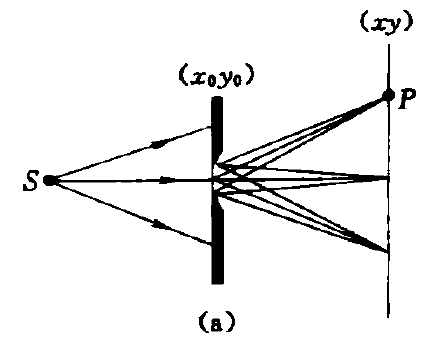
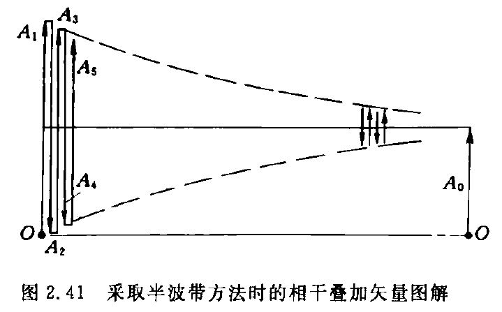
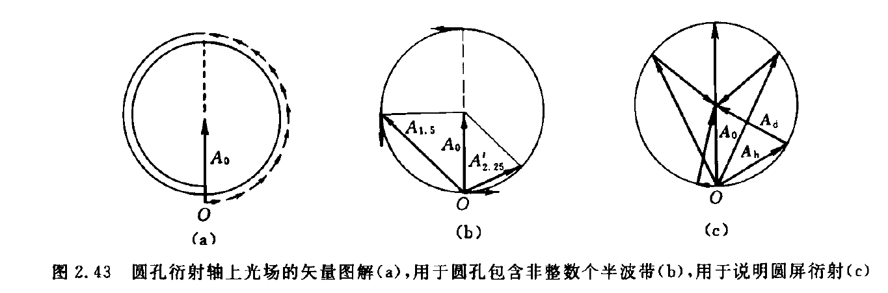
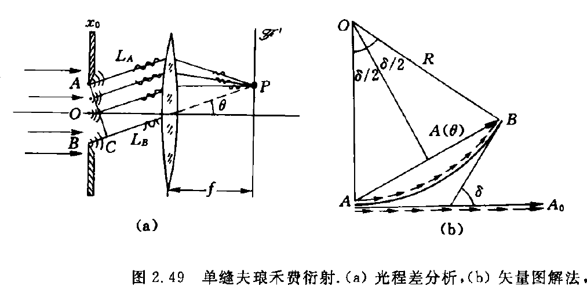
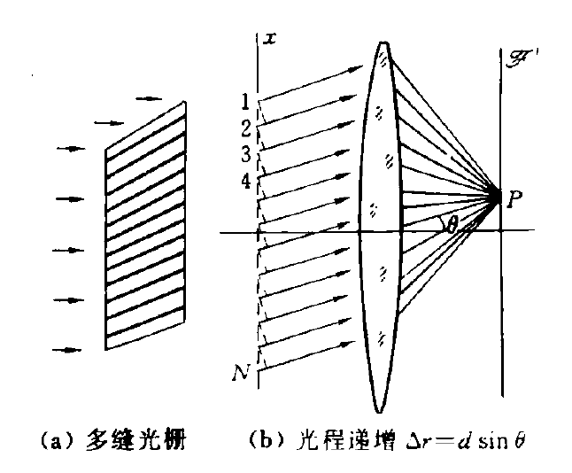
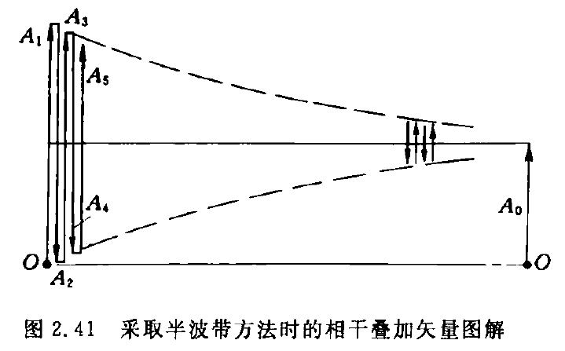
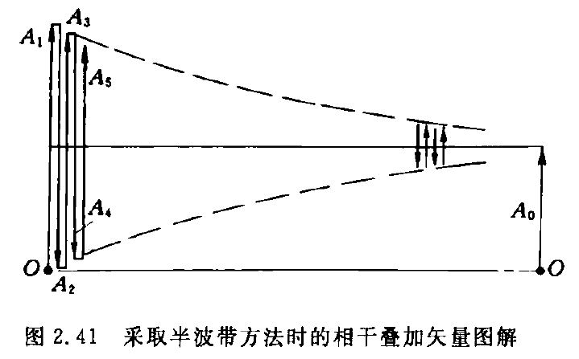

本文档的 .md 源文件请见：
https://github.com/BeiHai0/Surviving-LZU-Physics/tree/master/小班讲义/光学基础1小班讲义
第0章 随便唠唠
找电子书
zlib
https://zh.zlibrary-global.se/
很遗憾，上面的网站被 FBI 干掉了。下面的网站目前还能用：
https://zh.1lib.sk/?ref=www.tboxn.com
小心盗版网站！凡要你先交钱后下载的都是盗版网站！
libgen
https://libgen.is/
annas
https://annas-archive.org/
算计物理群文件
电子笔记
markdown 记笔记
软件（vscode）
不同软件的 markdown 标准可能不同。如果你想接着我的 md 文件继续写，还是用 vscode 吧！
https://code.visualstudio.com/
markdown 基本语法
https://markdown.com.cn/
https://www.markdownguide.org/basic-syntax/
数学公式
https://www.cmor-faculty.rice.edu/~heinken/latex/symbols.pdf
https://katex.org/docs/supported
vscode 效率工具——snippets
越早上手越爽！
https://www.freecodecamp.org/news/definitive-guide-to-snippets-visual-studio-code/
欢迎关注 my github：
https://github.com/BeiHai0/Surviving-LZU-Physics
README.md 里有自己配置的 snippets 供参考
github——用于备份
https://github.com/
廖雪峰老师的 git 教程：
https://www.liaoxuefeng.com/wiki/896043488029600
问问题
知乎
Stack Exchange
https://stackexchange.com/
英语要好
google
维基百科
小时百科也还行
AI
ChatGPT
Gemini
文心一言之类的
第1章 几何光学
惠更斯原理
惠更斯原理
光扰动同时到达的空间曲面被称为波面或波前，波前上的每一点可以被看作一个新的扰动中心，称其为子波源或次波源，次波源向四周激发次波；下一时刻的波前 应当是这些大量次波面的公共切面，也称其为包络面；次波中心与其次波面上的那个切点的连线方向，给出了该处光传播方向 ，亦即光射线方向。
惠更斯原理导出折射定律
sin i 1 sin i 2 = v 1 v 2 \frac{\sin i_1}{\sin i_2}
=\frac{v_1}{v_2} sin i 2 sin i 1 = v 2 v 1
其中，i 1 i_1 i 1 v 1 v_1 v 1 i 2 i_2 i 2 v 2 v_2 v 2
折射率
折射率的定义
介质的折射率，记为 n n n
n ≡ c v n
\equiv \frac{c}{v} n ≡ v c
其中，v v v
显然，真空的折射率为 1 1 1 n > 1 n>1 n > 1
折射率表述的折射定律
n 1 sin i 1 = n 2 sin i 2 n_1\sin i_1
=n_2\sin i_2 n 1 sin i 1 = n 2 sin i 2
其中，n 1 n_1 n 1 i 1 i_1 i 1 n 2 n_2 n 2 i 2 i_2 i 2
色散
色散的定义
一种介质对不同波长的光具有不同的折射率，这被称作色散
介质中的波长
对于波，其波速 v v v f f f λ \lambda λ
v = f λ v
=f\lambda v = f λ
在真空中：
c = f 0 λ 0 c
=f_0\lambda_0 c = f 0 λ 0
其中，c c c f 0 f_0 f 0 λ 0 \lambda_0 λ 0
在介质中：
v = f λ v
=f\lambda v = f λ
其中，v v v f f f λ \lambda λ
两式相除，结合折射率的定义 n ≡ c v n\equiv \frac{c}{v} n ≡ v c
n = f 0 f ⋅ λ 0 λ n
=\frac{f_0}{f}\cdot\frac{\lambda_0}{\lambda} n = f f 0 ⋅ λ λ 0
特别地，在线性介质的光场中 ，光扰动的时间频率仅由光源决定 ，与介质无关 ，于是 f 0 = f f_0=f f 0 = f
n = λ 0 λ n
=\frac{\lambda_0}{\lambda} n = λ λ 0
而之前提到，所有非真空介质的折射率 n > 1 n>1 n > 1 在介质中光波长变短了 （相较于真空中的光波长）。
光程
光程的定义
光程定义为光线路径的几何长度与所经过的介质折射率的乘积
设光沿路径 l l l P P P Q Q Q L l ( P Q ) L_l(PQ) L l ( PQ )
L l ( P Q ) ≡ ∫ P Q ( l ) n ( r ⃗ ) ∣ d r ⃗ ∣ L_l(PQ)
\equiv \underset{(l)}{\int_{P}^{Q}}n(\vec{r})|\mathrm{d}\vec{r} | L l ( PQ ) ≡ ( l ) ∫ P Q n ( r ) ∣ d r ∣
光程的离散化表达式：
L l ( P Q ) ≡ ∑ i n i l i L_l(PQ)
\equiv \sum_{i} n_i l_i L l ( PQ ) ≡ i ∑ n i l i
其中，n i n_i n i i i i l i l_i l i i i i
光程与相位差
注意，这里定点振动的相位按照 φ = ω t + φ 0 \varphi=\omega t+\varphi_0 φ = ω t + φ 0
设光沿路径 l l l P P P Q Q Q l l l r ⃗ \vec{r} r t t t r ⃗ \vec{r} r d t \mathrm{d}t d t r ⃗ + d r ⃗ \vec{r}+\mathrm{d}\vec{r} r + d r
∣ d r ⃗ ∣ = v ( r ⃗ ) d t = c n ( r ⃗ ) d t (0) \begin{aligned}
|\mathrm{d}\vec{r}|
&=v(\vec{r})\mathrm{d}t \\
&=\frac{c}{n(\vec{r})}\mathrm{d}t \tag{0}
\end{aligned} ∣ d r ∣ = v ( r ) d t = n ( r ) c d t ( 0 )
其中，n ( r ⃗ ) n(\vec{r}) n ( r ) r ⃗ \vec{r} r d r ⃗ \mathrm{d}\vec{r} d r d t \mathrm{d}t d t d t \mathrm{d}t d t d r ⃗ \mathrm{d}\vec{r} d r
t t t r ⃗ \vec{r} r φ ( r ⃗ , t ) \varphi(\vec{r},t) φ ( r , t ) t + d t t+\mathrm{d}t t + d t r ⃗ + d r ⃗ \vec{r}+\mathrm{d}\vec{r} r + d r φ ( r ⃗ + d r ⃗ , t + d t ) \varphi(\vec{r}+\mathrm{d}\vec{r},t+\mathrm{d}t) φ ( r + d r , t + d t )
光的传播可以看作定点振动的传播，自然而然地，光的传播必定意味着相位信息的传播。由于 t t t r ⃗ \vec{r} r d t \mathrm{d}t d t r ⃗ + d r ⃗ \vec{r}+\mathrm{d}\vec{r} r + d r t t t r ⃗ \vec{r} r t + d t t+\mathrm{d}t t + d t r ⃗ + d r ⃗ \vec{r}+\mathrm{d}\vec{r} r + d r ，于是有：
φ ( r ⃗ , t ) = φ ( r ⃗ + d r ⃗ , t + d t ) (1) \varphi(\vec{r},t)
=\varphi(\vec{r}+\mathrm{d}\vec{r},t+\mathrm{d}t) \tag{1} φ ( r , t ) = φ ( r + d r , t + d t ) ( 1 )
在 t ∼ t + d t t\sim t+\mathrm{d}t t ∼ t + d t r ⃗ \vec{r} r φ ( r ⃗ , t ) \varphi(\vec{r},t) φ ( r , t ) φ ( r ⃗ , t ) + ω d t \varphi(\vec{r},t)+\omega \mathrm{d}t φ ( r , t ) + ω d t
φ ( r ⃗ , t + d t ) = φ ( r ⃗ , t ) + ω d t (2) \varphi(\vec{r},t+\mathrm{d}t)
=\varphi(\vec{r},t)+\omega\mathrm{d}t \tag{2} φ ( r , t + d t ) = φ ( r , t ) + ω d t ( 2 )
联立 ( 1 ) ( 2 ) (1)(2) ( 1 ) ( 2 ) φ ( r ⃗ , t ) \varphi(\vec{r},t) φ ( r , t )
φ ( r ⃗ + d r ⃗ , t + d t ) − φ ( r ⃗ , t + d t ) = − ω d t \varphi(\vec{r}+\mathrm{d}\vec{r},t+\mathrm{d}t)-\varphi(\vec{r},t+\mathrm{d}t)
=-\omega \mathrm{d}t φ ( r + d r , t + d t ) − φ ( r , t + d t ) = − ω d t
再用前面推导得到的式子消去 d t \mathrm{d}t d t
φ ( r ⃗ + d r ⃗ , t + d t ) − φ ( r ⃗ , t + d t ) = − ω n ( r ⃗ ) c ∣ d r ⃗ ∣ \varphi(\vec{r}+\mathrm{d}\vec{r},t+\mathrm{d}t)-\varphi(\vec{r},t+\mathrm{d}t)
=-\omega\frac{n(\vec{r})}{c}|\mathrm{d}\vec{r} | φ ( r + d r , t + d t ) − φ ( r , t + d t ) = − ω c n ( r ) ∣ d r ∣
在同一时刻 t + d t t+\mathrm{d}t t + d t r ⃗ \vec{r} r P P P Q Q Q l l l
φ ( r ⃗ Q , t + d t ) − φ ( r ⃗ P , t + d t ) = ∫ P Q ( l ) − ω n ( r ⃗ ) c ∣ d r ⃗ ∣ = ∫ P Q ( l ) − 2 π T n ( r ⃗ ) c ∣ d r ⃗ ∣ = ∫ P Q ( l ) − 2 π T 0 n ( r ⃗ ) c ∣ d r ⃗ ∣ = − 2 π T 0 c ∫ P Q ( l ) n ( r ⃗ ) ∣ d r ⃗ ∣ ≡ − 2 π λ 0 L l ( P Q ) \begin{aligned}
\varphi(\vec{r}_Q,t+\mathrm{d}t)-\varphi(\vec{r}_P,t+\mathrm{d}t)
&=\underset{(l)}{\int_{P}^{Q}} -\omega \frac{n(\vec{r})}{c}|\mathrm{d}\vec{r} | \\
&=\underset{(l)}{\int_{P}^{Q}} -\frac{2\pi }{T} \frac{n(\vec{r})}{c}|\mathrm{d}\vec{r} | \\
&=\underset{(l)}{\int_{P}^{Q}} -\frac{2\pi }{T_0} \frac{n(\vec{r})}{c}|\mathrm{d}\vec{r} | \\
&=-\frac{2\pi }{T_0 c}\underset{(l)}{\int_{P}^{Q}} n(\vec{r})|\mathrm{d}\vec{r} | \\
&\equiv -\frac{2\pi }{\lambda_0} L_l(PQ)
\end{aligned} φ ( r Q , t + d t ) − φ ( r P , t + d t ) = ( l ) ∫ P Q − ω c n ( r ) ∣ d r ∣ = ( l ) ∫ P Q − T 2 π c n ( r ) ∣ d r ∣ = ( l ) ∫ P Q − T 0 2 π c n ( r ) ∣ d r ∣ = − T 0 c 2 π ( l ) ∫ P Q n ( r ) ∣ d r ∣ ≡ − λ 0 2 π L l ( PQ )
可以看到，同一时刻 P , Q P,Q P , Q
φ ( r ⃗ Q , t ) − φ ( r ⃗ P , t ) = − 2 π λ 0 L l ( P Q ) \varphi(\vec{r}_Q,t)-\varphi(\vec{r}_P,t)
=-\frac{2\pi}{\lambda_0}L_l(PQ) φ ( r Q , t ) − φ ( r P , t ) = − λ 0 2 π L l ( PQ )
这就是说，同一时刻空间中同一光线上两点 P , Q P,Q P , Q P P P l l l Q Q Q
光程与时差
设某一振动在 t P t_P t P P P P t Q t_Q t Q Q Q Q
t Q − t P = ∑ i l i v i = ∑ i n i l i / c = 1 c ∑ i n i l i = L l ( P Q ) c \begin{aligned}
t_{Q}-t_{P}
&=\sum_{i} \frac{l_i}{v_i} \\
&=\sum_{i} n_il_i/c \\
&=\frac{1}{c}\sum_{i} n_i l_i \\
&=\frac{L_l(PQ)}{c}
\end{aligned} t Q − t P = i ∑ v i l i = i ∑ n i l i / c = c 1 i ∑ n i l i = c L l ( PQ )
反射光束、折射光束的等光程性
反射定律、折射定律给出的反射光束或折射光束的方向，与等光程性的要求一致。人们可以从等光程要求出发，导出反射定律和折射定律。
费马原理
费马原理的表述
光线/沿/光程为平稳值的路径/传播
光程为平稳值有四种情况：极小值、极大值和常数
在 P , Q P,Q P , Q L L L l l l 函数 决定。 光程 L L L 泛函为平稳值要求其变分为 零，于是根据费马原理，光线的真实传播路径应该满足：
δ L [ l ] = 0 \delta L[l]
=0 δ L [ l ] = 0
其中，δ \delta δ
费马原理与成像
物像等光程性
由物点 P P P 像点 。
成像过程是一个对同心光束实现共轭变换的过程。
从费马原理出发可以推得：从物点到像点的各光线的光程是彼此相等的。
球面折射傍轴成像公式
L ( Q O Q ′ ) = n s + n ′ x L(QOQ')
=ns+n'x L ( QO Q ′ ) = n s + n ′ x
h 2 ≈ 2 r Δ h^2\approx 2r\Delta h 2 ≈ 2 r Δ
考虑三角形 由 h , r − Δ , r h,r-\Delta,r h , r − Δ , r
h 2 + ( r − Δ ) 2 = r 2 ⟹ h 2 − 2 r Δ + Δ 2 = 0 h^2+(r-\Delta)^2
=r^2
\Longrightarrow
h^2-2r\Delta +\Delta^2
=0 h 2 + ( r − Δ ) 2 = r 2 ⟹ h 2 − 2 r Δ + Δ 2 = 0
Δ \Delta Δ Δ 2 \Delta^2 Δ 2
h 2 ≈ 2 r Δ h^2
\approx 2r\Delta h 2 ≈ 2 r Δ
L ( Q M Q ′ ) = n ( s + Δ ) 2 + h 2 + n ′ ( x − Δ ) 2 + h 2 = n s 2 + h 2 + 2 s Δ + Δ 2 + n ′ x 2 + h 2 − 2 x Δ + Δ 2 ≈ n s 2 + h 2 + 2 s Δ + n ′ x 2 + h 2 − 2 x Δ ( p s : h 2 ≈ 2 r Δ ) = n s 2 + ( 2 r + 2 s ) Δ + n ′ x 2 + ( 2 r − 2 x ) Δ = n s 1 + ( 2 r + 2 s ) Δ s 2 + n ′ x 1 + ( 2 r − 2 x ) Δ x 2 ≈ n s ( 1 + ( r + s ) Δ s 2 ) + n ′ x ( 1 + ( r − x ) Δ x 2 ) = n s + n ′ x + [ ( r + s ) s n + r − x x n ′ ] Δ \begin{aligned}
L(QMQ')
&=n\sqrt{(s+\varDelta )^2+h^2 }+n'\sqrt{(x-\varDelta)^2+h^2} \\
&=n\sqrt{s^2+h^2+2s\varDelta +\varDelta^2 }+n'\sqrt{x^2+h^2-2x\varDelta +\varDelta^2} \\
&\approx n\sqrt{s^2+h^2+2s\varDelta }+n'\sqrt{x^2+h^2-2x\varDelta } \\
(\mathrm{ps}:h^2\approx2r\Delta )&=n\sqrt{s^2+(2r+2s)\varDelta }+n'\sqrt{x^2+(2r-2x)\varDelta } \\
&=ns\sqrt{1+\frac{(2r+2s)\varDelta}{s^2} }+n'x\sqrt{1+\frac{(2r-2x)\varDelta}{x^2} } \\
&\approx ns(1+\frac{(r+s)\varDelta}{s^2})+n'x(1+\frac{(r-x)\varDelta}{x^2}) \\
&=ns+n'x+\bigg[ \frac{(r+s)}{s}n+\frac{r-x}{x}n' \bigg]\varDelta
\end{aligned} L ( QM Q ′ ) ( ps : h 2 ≈ 2 r Δ ) = n ( s + Δ ) 2 + h 2 + n ′ ( x − Δ ) 2 + h 2 = n s 2 + h 2 + 2 s Δ + Δ 2 + n ′ x 2 + h 2 − 2 x Δ + Δ 2 ≈ n s 2 + h 2 + 2 s Δ + n ′ x 2 + h 2 − 2 x Δ = n s 2 + ( 2 r + 2 s ) Δ + n ′ x 2 + ( 2 r − 2 x ) Δ = n s 1 + s 2 ( 2 r + 2 s ) Δ + n ′ x 1 + x 2 ( 2 r − 2 x ) Δ ≈ n s ( 1 + s 2 ( r + s ) Δ ) + n ′ x ( 1 + x 2 ( r − x ) Δ ) = n s + n ′ x + [ s ( r + s ) n + x r − x n ′ ] Δ
光程差：
Δ L ≡ L ( Q M Q ′ ) − L ( Q O Q ′ ) ≈ [ ( r + s ) s n + r − x x n ′ ] Δ \begin{aligned}
\Delta L
&\equiv L(QMQ')-L(QOQ') \\
&\approx \bigg[ \frac{(r+s)}{s}n+\frac{r-x}{x}n' \bigg]\varDelta
\end{aligned} Δ L ≡ L ( QM Q ′ ) − L ( QO Q ′ ) ≈ [ s ( r + s ) n + x r − x n ′ ] Δ
当 Δ \varDelta Δ
( r + s ) s n + r − x x n ′ = 0 \frac{(r+s)}{s}n+\frac{r-x}{x}n'
=0 s ( r + s ) n + x r − x n ′ = 0
或者改写为：
n s + n ′ x = n ′ − n r \frac{n}{s}+\frac{n'}{x}
=\frac{n'-n}{r} s n + x n ′ = r n ′ − n
这里，s s s x x x r r r
若把像距记为 s ′ s' s ′
n s + n ′ s ′ = n ′ − n r \frac{n}{s}+\frac{n'}{s'}
=\frac{n'-n}{r} s n + s ′ n ′ = r n ′ − n
光线方程
折射率分层均匀的情形
考虑折射率只与 y y y x x x n = n ( y ) n=n(y) n = n ( y )
由折射定律，得：
n 0 sin θ 0 = n 1 sin θ 1 = ⋯ n sin θ = ⋯ n_0\sin\theta_0
=n_1\sin\theta_1
=\cdots n\sin\theta
=\cdots n 0 sin θ 0 = n 1 sin θ 1 = ⋯ n sin θ = ⋯
几何关系：
( d s ) 2 = ( d x ) 2 + ( d y ) 2 ⟹ ( d s d x ) 2 = 1 + ( d y d x ) 2 (\mathrm{d}s)^2
=(\mathrm{d}x)^2+(\mathrm{d}y)^2
\Longrightarrow (\frac{\mathrm{d}s}{\mathrm{d}x})^2
=1+(\frac{\mathrm{d}y}{\mathrm{d}x})^2 ( d s ) 2 = ( d x ) 2 + ( d y ) 2 ⟹ ( d x d s ) 2 = 1 + ( d x d y ) 2
d s d x = 1 sin θ \frac{\mathrm{d}s}{\mathrm{d}x}
=\frac{1}{\sin\theta} d x d s = sin θ 1
{ n 0 sin θ 0 = n sin θ ( d s d x ) 2 = 1 + ( d y d x ) 2 d s d x = 1 sin θ ⟹ d y d x = n 2 ( y ) n 0 2 sin 2 θ 0 − 1 \left\{
\begin{aligned}
&n_0\sin\theta_0
=n\sin\theta \\
&(\frac{\mathrm{d}s}{\mathrm{d}x})^2
=1+(\frac{\mathrm{d}y}{\mathrm{d}x})^2 \\
&\frac{\mathrm{d}s}{\mathrm{d}x}
=\frac{1}{\sin\theta}
\end{aligned}
\right.
\Longrightarrow
\frac{\mathrm{d}y}{\mathrm{d}x}
=\sqrt{\frac{n^2(y)}{n_0^2\sin^2\theta_0}-1} ⎩ ⎨ ⎧ n 0 sin θ 0 = n sin θ ( d x d s ) 2 = 1 + ( d x d y ) 2 d x d s = sin θ 1 ⟹ d x d y = n 0 2 sin 2 θ 0 n 2 ( y ) − 1
第1章 习题选解
1.7
1.8
期末考题
光在各向同性介质中的传播规律
麦克斯韦方程组
微分形式
{ ∇ ⋅ B ⃗ = 0 ∇ ⋅ D ⃗ = ρ ∇ × E ⃗ = − ∂ B ⃗ ∂ t ∇ × H ⃗ = j ⃗ + ∂ D ⃗ ∂ t \left\{
\begin{aligned}
&\nabla\cdot\vec{B}
=0 \\
&\nabla\cdot\vec{D}
=\rho \\
&\nabla\times\vec{E}
=-\frac{\partial \vec{B}}{\partial t} \\
&\nabla\times\vec{H}
=\vec{j}+\frac{\partial \vec{D}}{\partial t}
\end{aligned}
\right. ⎩ ⎨ ⎧ ∇ ⋅ B = 0 ∇ ⋅ D = ρ ∇ × E = − ∂ t ∂ B ∇ × H = j + ∂ t ∂ D
积分形式
{ ∯ ∂ V B ⃗ ⋅ d S ⃗ = 0 ∯ ∂ V D ⃗ ⋅ d S ⃗ = Q ∮ ∂ S E ⃗ ⋅ d l ⃗ = − ∬ S ∂ B ⃗ ∂ t ⋅ d S ⃗ ∮ ∂ S H ⃗ ⋅ d l ⃗ = I + ∯ S ∂ D ⃗ ∂ t ⋅ d S ⃗ \left\{
\begin{aligned}
&\oiint\limits_{\partial V} \vec{B}\cdot\mathrm{d}\vec{S}
=0 \\
&\oiint\limits_{\partial V}\vec{D}\cdot\mathrm{d}\vec{S}
=Q \\
&\oint\limits_{\partial S} \vec{E}\cdot\mathrm{d}\vec{l}
=-\iint\limits_{S}\frac{\partial \vec{B}}{\partial t}\cdot\mathrm{d}\vec{S} \\
&\oint\limits_{\partial S} \vec{H}\cdot\mathrm{d}\vec{l}
=I+\oiint\limits_{S} \frac{\partial \vec{D}}{\partial t}\cdot\mathrm{d}\vec{S}
\end{aligned}
\right. ⎩ ⎨ ⎧ ∂ V ∬ B ⋅ d S = 0 ∂ V ∬ D ⋅ d S = Q ∂ S ∮ E ⋅ d l = − S ∬ ∂ t ∂ B ⋅ d S ∂ S ∮ H ⋅ d l = I + S ∬ ∂ t ∂ D ⋅ d S
光的电磁性质
（1）光扰动是一种电磁扰动。光扰动随时间变化和在空间的分布遵从麦克斯韦方程组：
{ ∇ ⋅ B ⃗ = 0 ∇ ⋅ D ⃗ = ρ ∇ × E ⃗ = − ∂ B ⃗ ∂ t ∇ × H ⃗ = j ⃗ + ∂ D ⃗ ∂ t \left\{
\begin{aligned}
&\nabla\cdot\vec{B}
=0 \\
&\nabla\cdot\vec{D}
=\rho \\
&\nabla\times\vec{E}
=-\frac{\partial \vec{B}}{\partial t} \\
&\nabla\times\vec{H}
=\vec{j}+\frac{\partial \vec{D}}{\partial t}
\end{aligned}
\right. ⎩ ⎨ ⎧ ∇ ⋅ B = 0 ∇ ⋅ D = ρ ∇ × E = − ∂ t ∂ B ∇ × H = j + ∂ t ∂ D
其中，D ⃗ ≡ ε 0 E ⃗ + P ⃗ , H ⃗ ≡ B ⃗ μ 0 − M ⃗ \vec{D}\equiv \varepsilon_0\vec{E}+\vec{P},\vec{H}\equiv \frac{\vec{B}}{\mu_0}-\vec{M} D ≡ ε 0 E + P , H ≡ μ 0 B − M P ⃗ \vec{P} P M ⃗ \vec{M} M ρ \rho ρ j ⃗ \vec{j} j
若光在各向同性线性非铁磁介质中传播，则有：
P ⃗ = χ e ε 0 E ⃗ ， M ⃗ = χ M H ⃗ \vec{P}
=\chi_{e}\varepsilon_0 \vec{E}，~~
\vec{M}
=\chi_{\mathrm{M}}\vec{H} P = χ e ε 0 E ， M = χ M H
（2）光波是一种电磁波
由矢量分析可得，光在各向同性线性非铁磁介质中传播时，E ⃗ , H ⃗ \vec{E},\vec{H} E , H
∇ 2 E ⃗ − ε μ ∂ 2 E ⃗ ∂ t 2 = 0 \nabla^2\vec{E}-\varepsilon\mu\frac{\partial^2\vec{E}}{\partial t^2}
=0 ∇ 2 E − ε μ ∂ t 2 ∂ 2 E = 0
∇ 2 H ⃗ − ε μ ∂ 2 H ⃗ ∂ t 2 = 0 \nabla^2\vec{H}-\varepsilon\mu\frac{\partial^2\vec{H}}{\partial t^2}
=0 ∇ 2 H − ε μ ∂ t 2 ∂ 2 H = 0
其中，ε \varepsilon ε μ \mu μ
从中可知，光在介质中的传播速度 v v v
v = 1 ε μ = 1 ε r ε 0 μ μ 0 v
=\frac{1}{\sqrt{\varepsilon\mu}}
=\frac{1}{\sqrt{\varepsilon_r\varepsilon_0\mu\mu_0}} v = ε μ 1 = ε r ε 0 μ μ 0 1
其中，ε = ε r ε 0 , μ = μ r μ 0 \varepsilon=\varepsilon_r\varepsilon_0,\mu=\mu_r\mu_0 ε = ε r ε 0 , μ = μ r μ 0 ε r \varepsilon_r ε r μ r \mu_r μ r
特别地，在真空中，ε r = 1 , μ r = 1 \varepsilon_r=1,\mu_r=1 ε r = 1 , μ r = 1 c c c
c = 1 ε 0 μ 0 c
=\frac{1}{\sqrt{\varepsilon_0\mu_0}} c = ε 0 μ 0 1
在后面我们会定义某种介质的折射率 n n n
n ≡ c v n
\equiv \frac{c}{v} n ≡ v c
可得：
n ≡ c v = ε r μ r n
\equiv \frac{c}{v}
=\sqrt{\varepsilon_r\mu_r} n ≡ v c = ε r μ r
（3）平面电磁波是自由空间电磁波的一基元成分
可以验证，平面电磁波函数：
E ⃗ ( r ⃗ , t ) = E ⃗ 0 cos ( ω t − k ⃗ ⋅ r ⃗ + φ E ) \vec{E}(\vec{r},t)
=\vec{E}_0\cos(\omega t-\vec{k}\cdot\vec{r}+\varphi_E) E ( r , t ) = E 0 cos ( ω t − k ⋅ r + φ E )
H ⃗ ( r ⃗ , t ) = H ⃗ 0 cos ( ω t − k ⃗ ⋅ r ⃗ + φ H ) \vec{H}(\vec{r},t)
=\vec{H}_0\cos(\omega t-\vec{k}\cdot\vec{r}+\varphi_H) H ( r , t ) = H 0 cos ( ω t − k ⋅ r + φ H )
满足波动方程。其中，k ⃗ \vec{k} k k k k
k = 2 π λ k
=\frac{2\pi}{\lambda} k = λ 2 π
（4）光是横波
E ⃗ ⊥ k ⃗ , H ⃗ ⊥ k ⃗ \vec{E}
\perp \vec{k},~~
\vec{H}
\perp \vec{k} E ⊥ k , H ⊥ k
（5）电场与磁场之间具有正交性和同步性
振荡着的电场与磁场，彼此在方向上是时时正交的，E ⃗ , H ⃗ , k ⃗ \vec{E},\vec{H},\vec{k} E , H , k
( E ⃗ × H ⃗ ) ∥ k ⃗ (\vec{E}\times\vec{H})
\parallel \vec{k} ( E × H ) ∥ k
（6）电磁波能流密度——坡印廷矢量
电磁波能流密度矢量：
S ⃗ ( r ⃗ , t ) = E ⃗ ( r ⃗ , t ) × H ⃗ ( r ⃗ , t ) \vec{S}(\vec{r},t)
=\vec{E}(\vec{r},t)\times\vec{H}(\vec{r},t) S ( r , t ) = E ( r , t ) × H ( r , t )
称为坡印廷矢量
光强
对于光波，平均能流密度为：
S ˉ = 1 T ∫ 0 T ∣ E ⃗ × H ⃗ ∣ d t = 1 2 ε r ε 0 μ r μ 0 E 0 2 \begin{aligned}
\bar{S}
&=\frac{1}{T}\int_{0}^{T}|\vec{E}\times\vec{H} |\mathrm{d}t \\
&=\frac{1}{2}\sqrt{\frac{\varepsilon_r\varepsilon_0}{\mu_r\mu_0}}E_0^2
\end{aligned} S ˉ = T 1 ∫ 0 T ∣ E × H ∣ d t = 2 1 μ r μ 0 ε r ε 0 E 0 2
在光频段，μ r ≈ 1 \mu_r\approx 1 μ r ≈ 1 n ≡ ε r μ r ≈ ε r n\equiv \sqrt{\varepsilon_r\mu_r}\approx\sqrt{\varepsilon_r} n ≡ ε r μ r ≈ ε r
S ˉ = 1 2 ε r ε 0 μ r μ 0 E 0 2 ≈ 1 2 ε 0 μ 0 n E 0 2 ∝ n E 0 2 \begin{aligned}
\bar{S}
&=\frac{1}{2}\sqrt{\frac{\varepsilon_r\varepsilon_0}{\mu_r\mu_0}}E_0^2 \\
&\approx \frac{1}{2}\sqrt{\frac{\varepsilon_0}{\mu_0}}nE_0^2 \\
&\propto nE_0^2
\end{aligned} S ˉ = 2 1 μ r μ 0 ε r ε 0 E 0 2 ≈ 2 1 μ 0 ε 0 n E 0 2 ∝ n E 0 2
光强，记为 I I I
I ≡ n E 0 2 I
\equiv nE_0^2 I ≡ n E 0 2
可见，光强度量的是平均电磁能流密度，但和平均电磁能流密度差一个系数
定态波场
（1）空间各点的扰动是同频率的振动
（2）波场中各点扰动的振幅不随时间变化
定态光波的标量表示
E ⃗ \vec{E} E U U U E x , E y , E z E_x,E_y,E_z E x , E y , E z
∇ 2 U − 1 v 2 ∂ 2 U ∂ t 2 = 0 \nabla^2U-\frac{1}{v^2}\frac{\partial^2 U}{\partial t^2}
=0 ∇ 2 U − v 2 1 ∂ t 2 ∂ 2 U = 0
U U U E x , E y , E z E_x,E_y,E_z E x , E y , E z
对于某一确定场点 r ⃗ \vec{r} r E i ( r ⃗ , t ) , ( i = x , y , z ) E_i(\vec{r},t),(i=x,y,z) E i ( r , t ) , ( i = x , y , z )
U ( P , t ) = A ( P ) cos ( ω t + φ ( P ) ) U(P,t)
=A(P)\cos(\omega t+\varphi(P)) U ( P , t ) = A ( P ) cos ( ω t + φ ( P ))
其中，A ( P ) A(P) A ( P ) φ ( P ) \varphi(P) φ ( P )
波函数的复数表示
简谐波函数的实数形式：
U ( P , t ) = A ( P ) cos ( ω t + φ ( P ) ) U(P,t)
=A(P)\cos(\omega t+\varphi(P)) U ( P , t ) = A ( P ) cos ( ω t + φ ( P ))
其中，φ ( P ) \varphi(P) φ ( P ) P P P
复数形式：
U ~ ( P , t ) = A ( P ) e − i ( ω t + φ ( P ) ) \tilde{U}(P,t)
=A(P)e^{-\mathrm{i}(\omega t+\varphi(P))} U ~ ( P , t ) = A ( P ) e − i ( ω t + φ ( P ))
由欧拉公式 e i θ = cos θ + i sin θ e^{\mathrm{i}\theta}=\cos\theta+\mathrm{i}\sin\theta e i θ = cos θ + i sin θ
ℜ { U ~ ( P , t ) } = U ( P , t ) \Re\{\tilde{U}(P,t) \}
=U(P,t) ℜ { U ~ ( P , t )} = U ( P , t )
其中，ℜ { ⋅ } \Re\{\cdot \} ℜ { ⋅ }
比如：
ℜ { 1 + 2 i } = 1 \Re\{1+2\mathrm{i} \}
=1 ℜ { 1 + 2 i } = 1
平面简谐波
U ( r ⃗ , t ) = A cos ( ω t − k ⃗ ⋅ r ⃗ + φ 0 ) U(\vec{r},t)
=A\cos(\omega t-\vec{k}\cdot \vec{r} +\varphi_0) U ( r , t ) = A cos ( ω t − k ⋅ r + φ 0 )
其中，A A A r ⃗ \vec{r} r k ⃗ \vec{k} k k = 2 π λ k=\frac{2\pi}{\lambda} k = λ 2 π φ 0 \varphi_0 φ 0 t = 0 t=0 t = 0
U ~ ( r ⃗ , t ) = A e i ( k ⃗ ⋅ r ⃗ − ω t − φ 0 ) \tilde{U}(\vec{r},t)
=Ae^{\mathrm{i}(\vec{k}\cdot\vec{r}-\omega t-\varphi_0)} U ~ ( r , t ) = A e i ( k ⋅ r − ω t − φ 0 )
发散球面简谐波
U ( r ⃗ , t ) = a 1 r cos ( ω t − k r + φ 0 ) U(\vec{r},t)
=\frac{a_1}{r}\cos(\omega t-kr+\varphi_0) U ( r , t ) = r a 1 cos ( ω t − k r + φ 0 )
其中，r r r r ⃗ \vec{r} r φ 0 \varphi_0 φ 0
U ~ ( r ⃗ , t ) = a 1 r e i ( k r − ω t − φ 0 ) \tilde{U}(\vec{r},t)
=\frac{a_1}{r}e^{\mathrm{i}(kr-\omega t-\varphi_0)} U ~ ( r , t ) = r a 1 e i ( k r − ω t − φ 0 )
柱面简谐波
U ( r , t ) = b 1 r cos ( ω t − k r + φ 0 ) U(r,t)
=\frac{b_1}{\sqrt{r}}\cos(\omega t-kr+\varphi_0) U ( r , t ) = r b 1 cos ( ω t − k r + φ 0 )
U ~ ( r , t ) = b 1 r e i ( k r − ω t − φ 0 ) \tilde{U}(r,t)
=\frac{b_1}{\sqrt{r}}e^{\mathrm{i}(kr-\omega t-\varphi_0)} U ~ ( r , t ) = r b 1 e i ( k r − ω t − φ 0 )
复振幅
设 U ( P , t ) = A ( P ) cos ( ω t + φ ( P ) ) U(P,t)=A(P)\cos(\omega t+\varphi(P)) U ( P , t ) = A ( P ) cos ( ω t + φ ( P )) φ ( P ) \varphi(P) φ ( P ) P P P P P P U ~ ( P ) \tilde{U}(P) U ~ ( P )
U ~ ( P ) ≡ A ( P ) e − i φ ( P ) \tilde{U}(P)
\equiv A(P)e^{-\mathrm{i}\varphi(P)} U ~ ( P ) ≡ A ( P ) e − i φ ( P )
复振幅与时间无关，其关注的是光扰动在空间中的分布规律。
平面简谐波复振幅
U ( r ⃗ , t ) = A cos ( ω t − k ⃗ ⋅ r ⃗ + φ 0 ) U(\vec{r},t)
=A\cos(\omega t-\vec{k}\cdot \vec{r} +\varphi_0) U ( r , t ) = A cos ( ω t − k ⋅ r + φ 0 )
φ ( r ⃗ ) = − k ⃗ ⋅ r ⃗ + φ 0 \varphi(\vec{r})
=-\vec{k}\cdot\vec{r}+\varphi_0 φ ( r ) = − k ⋅ r + φ 0
U ~ ( r ⃗ ) ≡ A ( r ⃗ ) e − i φ ( r ⃗ ) = A e − i ( − k ⃗ ⋅ r ⃗ + φ 0 ) = A e i ( k ⃗ ⋅ r ⃗ − φ 0 ) \begin{aligned}
\tilde{U}(\vec{r})
&\equiv A(\vec{r})e^{-\mathrm{i}\varphi(\vec{r})} \\
&=A e^{-\mathrm{i}(-\vec{k}\cdot\vec{r}+\varphi_0)} \\
&=Ae^{\mathrm{i}(\vec{k}\cdot\vec{r}-\varphi_0)}
\end{aligned} U ~ ( r ) ≡ A ( r ) e − i φ ( r ) = A e − i ( − k ⋅ r + φ 0 ) = A e i ( k ⋅ r − φ 0 )
球面发散简谐波复振幅
U ( r ⃗ , t ) = a 1 r cos ( ω t − k r + φ 0 ) U(\vec{r},t)
=\frac{a_1}{r}\cos(\omega t-kr+\varphi_0) U ( r , t ) = r a 1 cos ( ω t − k r + φ 0 )
φ ( r ⃗ ) = − k r + φ 0 \varphi(\vec{r})
=-kr+\varphi_0 φ ( r ) = − k r + φ 0
U ~ ( r ⃗ ) ≡ A ( r ⃗ ) e − i φ ( r ⃗ ) = a 1 r e − i ( − k r + φ 0 ) = a 1 r e i ( k r − φ 0 ) \begin{aligned}
\tilde{U}(\vec{r})
&\equiv A(\vec{r})e^{-\mathrm{i}\varphi(\vec{r})} \\
&=\frac{a_1}{r}e^{-\mathrm{i}(-kr+\varphi_0)} \\
&=\frac{a_1}{r}e^{\mathrm{i}(kr-\varphi_0)}
\end{aligned} U ~ ( r ) ≡ A ( r ) e − i φ ( r ) = r a 1 e − i ( − k r + φ 0 ) = r a 1 e i ( k r − φ 0 )
柱面简谐波复振幅
U ( r , t ) = b 1 r cos ( ω t − k r + φ 0 ) U(r,t)
=\frac{b_1}{\sqrt{r}}\cos(\omega t-kr+\varphi_0) U ( r , t ) = r b 1 cos ( ω t − k r + φ 0 )
φ ( r ⃗ ) = − k r + φ 0 \varphi(\vec{r})
=-kr+\varphi_0 φ ( r ) = − k r + φ 0
U ~ ( r ⃗ ) ≡ A ( r ⃗ ) e − i φ ( r ⃗ ) = b 1 r e − i ( − k r + φ 0 ) = b 1 r e i ( k r − φ 0 ) \begin{aligned}
\tilde{U}(\vec{r})
&\equiv A(\vec{r}) e^{-\mathrm{i}\varphi(\vec{r})} \\
&=\frac{b_1}{\sqrt{r}}e^{-\mathrm{i}(-kr+\varphi_0)} \\
&=\frac{b_1}{\sqrt{r}}e^{\mathrm{i}(kr-\varphi_0)}
\end{aligned} U ~ ( r ) ≡ A ( r ) e − i φ ( r ) = r b 1 e − i ( − k r + φ 0 ) = r b 1 e i ( k r − φ 0 )
波前函数
观察平面上某点的复振幅称为波前函数。
一般用 z = c o n s t z=\mathrm{const} z = const z z z x , y x,y x , y U ~ ( x , y ) \tilde{U}(x,y) U ~ ( x , y )
球面波向平面波的转化
傍轴条件（振幅条件）—— z 2 ≫ ρ 2 z^2\gg \rho^2 z 2 ≫ ρ 2
源面 x 0 − y 0 x_0-y_0 x 0 − y 0 ( x 0 , y 0 ) (x_0, y_0) ( x 0 , y 0 ) x − y x-y x − y z z z ( x , y ) (x,y) ( x , y )
U ~ ( x , y ) ≡ a 1 r e i ( k r − φ 0 ) = a 1 ( x − x 0 ) 2 + ( y − y 0 ) 2 + z 2 e i ( k ( x − x 0 ) 2 + ( y − y 0 ) 2 + z 2 − φ 0 ) \begin{aligned}
\tilde{U}(x,y)
&\equiv \frac{a_1}{r}e^{\mathrm{i}(kr-\varphi_0)} \\
&=\frac{a_1}{\sqrt{(x-x_0)^2+(y-y_0)^2+z^2}}e^{\mathrm{i}(k\sqrt{(x-x_0)^2+(y-y_0)^2+z^2}-\varphi_0)}
\end{aligned} U ~ ( x , y ) ≡ r a 1 e i ( k r − φ 0 ) = ( x − x 0 ) 2 + ( y − y 0 ) 2 + z 2 a 1 e i ( k ( x − x 0 ) 2 + ( y − y 0 ) 2 + z 2 − φ 0 )
傍轴条件下，波前函数的近似表达是：
U ~ ( x , y ) ≈ a 1 z e i ( k z + k ( x − x 0 ) 2 + ( y − y 0 ) 2 2 z − φ 0 ) = a 1 z e i k z ⋅ e i k ( x − x 0 ) 2 + ( y − y 0 ) 2 2 z ⋅ e − i φ 0 \begin{aligned}
\tilde{U}(x,y)
&\approx \frac{a_1}{z}e^{\mathrm{i}(kz+k\frac{(x-x_0)^2+(y-y_0)^2}{2z}-\varphi_0)} \\
&=\frac{a_1}{z}e^{\mathrm{i}kz}\cdot e^{\mathrm{i}k\frac{(x-x_0)^2+(y-y_0)^2}{2z}}\cdot e^{-\mathrm{i}\varphi_0}
\end{aligned} U ~ ( x , y ) ≈ z a 1 e i ( k z + k 2 z ( x − x 0 ) 2 + ( y − y 0 ) 2 − φ 0 ) = z a 1 e i k z ⋅ e i k 2 z ( x − x 0 ) 2 + ( y − y 0 ) 2 ⋅ e − i φ 0
远场条件（相位条件）—— z λ ≫ ρ 2 z\lambda\gg \rho^2 z λ ≫ ρ 2
做题的话，远场条件可认为是 z λ ≈ 50 ρ 2 z\lambda\approx 50\rho^2 z λ ≈ 50 ρ 2
源面 x 0 − y 0 x_0-y_0 x 0 − y 0 ( x 0 , y 0 ) (x_0, y_0) ( x 0 , y 0 ) x − y x-y x − y z z z ( x , y ) (x,y) ( x , y )
U ~ ( x , y ) ≡ a 1 r e i ( k r − φ 0 ) = a 1 ( x − x 0 ) 2 + ( y − y 0 ) 2 + z 2 e i ( k ( x − x 0 ) 2 + ( y − y 0 ) 2 + z 2 − φ 0 ) \begin{aligned}
\tilde{U}(x,y)
&\equiv \frac{a_1}{r}e^{\mathrm{i}(kr-\varphi_0)} \\
&=\frac{a_1}{\sqrt{(x-x_0)^2+(y-y_0)^2+z^2}}e^{\mathrm{i}(k\sqrt{(x-x_0)^2+(y-y_0)^2+z^2}-\varphi_0)}
\end{aligned} U ~ ( x , y ) ≡ r a 1 e i ( k r − φ 0 ) = ( x − x 0 ) 2 + ( y − y 0 ) 2 + z 2 a 1 e i ( k ( x − x 0 ) 2 + ( y − y 0 ) 2 + z 2 − φ 0 )
仅远场条件下，波前函数的近似表达是：
U ~ ( x , y ) ≈ a 1 z + x 2 + y 2 2 z e i k z ⋅ e − i φ 0 \begin{aligned}
\tilde{U}(x,y)
\approx \frac{a_1}{z+\frac{x^2+y^2}{2z}}e^{\mathrm{i}kz}\cdot e^{-\mathrm{i}\varphi_0}
\end{aligned} U ~ ( x , y ) ≈ z + 2 z x 2 + y 2 a 1 e i k z ⋅ e − i φ 0
对于光波，远场条件更加苛刻。若满足了远场条件，则傍轴条件也必定满足。
于是对于光波，波前函数可进一步近似为：
U ~ ( x , y ) ≈ a 1 z e i k z ⋅ e − i φ 0 \tilde{U}(x,y)
\approx \frac{a_1}{z}e^{\mathrm{i}kz}\cdot e^{-\mathrm{i}\varphi_0} U ~ ( x , y ) ≈ z a 1 e i k z ⋅ e − i φ 0
由此可见，对于光波，在远场条件下，球面波可近似为平面波。
波叠加原理
在通常介质与通常光强条件下，波叠加原理成立，即总扰动等于各分扰动的叠加。
波叠加的两种情况
在波叠加原理成立的情况下，考察交叠区中的光强分布，存在两种情况：
非相干叠加
在观测时间中，总光强是各分光强的直接相加：
I ( P ) = I 1 ( P ) + I 2 ( P ) I(P)
=I_1(P)+I_2(P) I ( P ) = I 1 ( P ) + I 2 ( P )
相干叠加
在观测时间中，总光强不等于 各分光强的直接相加：
I ( P ) = I 1 ( P ) + I 2 ( P ) + Δ I ( P ) I(P)
=I_1(P)+I_2(P)+\Delta I(P) I ( P ) = I 1 ( P ) + I 2 ( P ) + Δ I ( P )
光波叠加的相干条件
（1）光振动方向一致或有方向一致的平行振动分量。
（2）两列波的频率相同。
证明 ：
设交叠区中场点 P P P
U 1 ( P , t ) = A 1 cos ( ω 1 t + φ 1 ( P ) ) U_1(P,t)
=A_1\cos(\omega_1 t+\varphi_1(P)) U 1 ( P , t ) = A 1 cos ( ω 1 t + φ 1 ( P ))
U 2 ( P , t ) = A 2 cos ( ω 2 t + φ 1 ( P ) ) U_2(P,t)
=A_2\cos(\omega_2 t+\varphi_1(P)) U 2 ( P , t ) = A 2 cos ( ω 2 t + φ 1 ( P ))
总扰动 U ( P , t ) U(P,t) U ( P , t )
U ( P , t ) = U 1 ( P , t ) + U 2 ( P , t ) U(P,t)
=U_1(P,t)+U_2(P,t) U ( P , t ) = U 1 ( P , t ) + U 2 ( P , t )
在光的矢量理论中，光强正比于平均电磁能流密度。这里我们讨论的是光的标量理论，用标量 U U U E ⃗ \vec{E} E
类比矢量理论，可定义标量理论中的“光强” ：
I ( P ) ≡ ⟨ U 2 ( P , t ) ⟩ ≡ 1 T ∫ 0 T U 2 ( P , t ) d t I(P)
\equiv \braket{U^2(P,t)}
\equiv \frac{1}{T} \int_{0}^{T} U^2(P,t)\mathrm{d}t I ( P ) ≡ ⟨ U 2 ( P , t ) ⟩ ≡ T 1 ∫ 0 T U 2 ( P , t ) d t
其中，T T T ⟨ ⋅ ⟩ \braket{\cdot} ⟨ ⋅ ⟩
基于此，总扰动的“光强”为：
I ( P ) ≡ ⟨ U 2 ( P , t ) ⟩ = ⟨ ( U 1 ( P , t ) + U 2 ( P , t ) ) 2 ⟩ = ⟨ U 1 2 ( P , t ) + U 2 2 ( P , t ) + 2 U 1 ( P , t ) U 2 ( P , t ) ⟩ = ⟨ U 1 2 ( P ) ⟩ + ⟨ U 2 2 ( P , t ) ⟩ + 2 ⟨ U 1 ( P , t ) U 2 ( P , t ) ⟩ = I 1 ( P ) + I 2 ( P ) + 2 ⟨ U 1 ( P , t ) U 2 ( P , t ) ⟩ \begin{aligned}
I(P)
&\equiv \braket{U^2(P,t)} \\
&=\bigg\langle \bigg( U_1(P,t)+U_2(P,t) \bigg)^2\bigg\rangle \\
&=\braket{U_1^2(P,t)+U_2^2(P,t)+2U_1(P,t)U_2(P,t)} \\
&=\braket{U_1^2(P)}+\braket{U_2^2(P,t)}+2\braket{U_1(P,t)U_2(P,t)} \\
&=I_1(P)+I_2(P)+2\braket{U_1(P,t)U_2(P,t)} \\
\end{aligned} I ( P ) ≡ ⟨ U 2 ( P , t ) ⟩ = ⟨ ( U 1 ( P , t ) + U 2 ( P , t ) ) 2 ⟩ = ⟨ U 1 2 ( P , t ) + U 2 2 ( P , t ) + 2 U 1 ( P , t ) U 2 ( P , t ) ⟩ = ⟨ U 1 2 ( P ) ⟩ + ⟨ U 2 2 ( P , t ) ⟩ + 2 ⟨ U 1 ( P , t ) U 2 ( P , t ) ⟩ = I 1 ( P ) + I 2 ( P ) + 2 ⟨ U 1 ( P , t ) U 2 ( P , t ) ⟩
观察交叉项：
Δ I ( P ) ≡ 2 ⟨ U 1 ( P , t ) U 2 ( P , t ) ⟩ = 2 ⟨ A 1 A 2 cos ( ω 1 t + φ 1 ) cos ( ω 2 t + φ 2 ) ⟩ = A 1 A 2 ⟨ cos [ ( ω 1 + ω 2 ) t + φ 1 + φ 2 ] ⟩ + A 1 A 2 ⟨ cos [ ( ω 1 − ω 2 ) t + ( φ 1 − φ 2 ) ] ⟩ \begin{aligned}
\Delta I(P)
&\equiv 2\braket{U_1(P,t)U_2(P,t)} \\
&=2\braket{A_1A_2\cos(\omega_1 t+\varphi_1)\cos(\omega_2 t+\varphi_2)} \\
&=A_1A_2\braket{\cos[(\omega_1+\omega_2)t+\varphi_1+\varphi_2]}+A_1A_2\braket{\cos[(\omega_1-\omega_2)t+(\varphi_1-\varphi_2)]}
\end{aligned} Δ I ( P ) ≡ 2 ⟨ U 1 ( P , t ) U 2 ( P , t ) ⟩ = 2 ⟨ A 1 A 2 cos ( ω 1 t + φ 1 ) cos ( ω 2 t + φ 2 ) ⟩ = A 1 A 2 ⟨ cos [( ω 1 + ω 2 ) t + φ 1 + φ 2 ] ⟩ + A 1 A 2 ⟨ cos [( ω 1 − ω 2 ) t + ( φ 1 − φ 2 )] ⟩
注意到，光的频率很大，时间周期很短，因此在相对很长的观察时间 T T T
⟨ cos [ ( ω 1 + ω 2 ) t + φ 1 + φ 2 ] ⟩ ≈ 0 \braket{\cos[(\omega_1+\omega_2)t+\varphi_1+\varphi_2]}
\approx 0 ⟨ cos [( ω 1 + ω 2 ) t + φ 1 + φ 2 ] ⟩ ≈ 0
于是进一步有：
Δ I ( P ) = A 1 A 2 ⟨ cos [ ( ω 1 + ω 2 ) t + φ 1 + φ 2 ] ⟩ + A 1 A 2 ⟨ cos [ ( ω 1 − ω 2 ) t + ( φ 1 − φ 2 ) ] ⟩ ≈ A 1 A 2 ⟨ cos [ ( ω 1 − ω 2 ) t + ( φ 1 − φ 2 ) ] ⟩ \begin{aligned}
\Delta I(P)
&=A_1A_2\braket{\cos[(\omega_1+\omega_2)t+\varphi_1+\varphi_2]}+A_1A_2\braket{\cos[(\omega_1-\omega_2)t+(\varphi_1-\varphi_2)]} \\
&\approx A_1A_2\braket{\cos[(\omega_1-\omega_2)t+(\varphi_1-\varphi_2)]}
\end{aligned} Δ I ( P ) = A 1 A 2 ⟨ cos [( ω 1 + ω 2 ) t + φ 1 + φ 2 ] ⟩ + A 1 A 2 ⟨ cos [( ω 1 − ω 2 ) t + ( φ 1 − φ 2 )] ⟩ ≈ A 1 A 2 ⟨ cos [( ω 1 − ω 2 ) t + ( φ 1 − φ 2 )] ⟩
当 ω 1 ≠ ω 2 \omega_1\ne \omega_2 ω 1 = ω 2 ω 1 \omega_1 ω 1 ω 2 \omega_2 ω 2
⟨ cos [ ( ω 1 − ω 2 ) t + ( φ 1 − φ 2 ) ] ⟩ ≈ 0 \braket{\cos[(\omega_1-\omega_2)t+(\varphi_1-\varphi_2)]}
\approx 0 ⟨ cos [( ω 1 − ω 2 ) t + ( φ 1 − φ 2 )] ⟩ ≈ 0
此时，
Δ I ( P ) ≈ 0 \Delta I(P)
\approx 0 Δ I ( P ) ≈ 0
也就是说，当 ω 1 ≠ ω 2 \omega_1\ne \omega_2 ω 1 = ω 2 ω 1 \omega_1 ω 1 ω 2 \omega_2 ω 2
当 ω 1 = ω 2 \omega_1=\omega_2 ω 1 = ω 2
Δ I ( P ) ≈ A 1 A 2 ⟨ cos [ ( ω 1 − ω 2 ) t + ( φ 1 − φ 2 ) ] ⟩ ≠ 0 , ( p s : φ 1 − φ 2 的值合适的情况下 ) \begin{aligned}
\Delta I(P)
&\approx A_1A_2\braket{\cos[(\omega_1-\omega_2)t+(\varphi_1-\varphi_2)]} \\
&\ne 0,~~(\mathrm{ps}:\varphi_1-\varphi_2~的值合适的情况下)
\end{aligned} Δ I ( P ) ≈ A 1 A 2 ⟨ cos [( ω 1 − ω 2 ) t + ( φ 1 − φ 2 )] ⟩ = 0 , ( ps : φ 1 − φ 2 的值合适的情况下 )
此时，干涉项不为零。也就是说，当满足同频条件 ω 1 = ω 2 \omega_1=\omega_2 ω 1 = ω 2
（3）场点有稳定的相位差。
双光束干涉强度公式
注意到：
I 1 ( P ) ≡ ⟨ U 1 ( P , t ) ⟩ ≈ 1 2 A 1 2 \begin{aligned}
I_1(P)
&\equiv \braket{U_1(P,t)} \\
&\approx \frac{1}{2}A_1^2
\end{aligned} I 1 ( P ) ≡ ⟨ U 1 ( P , t ) ⟩ ≈ 2 1 A 1 2
I 2 ( P ) ≈ 1 2 A 2 2 I_2(P)
\approx \frac{1}{2}A_2^2 I 2 ( P ) ≈ 2 1 A 2 2
上面推导给出，当 ω 1 = ω 2 \omega_1=\omega_2 ω 1 = ω 2
Δ I ( P ) ≈ A 1 A 2 ⟨ cos [ ( ω 1 − ω 2 ) t + ( φ 1 − φ 2 ) ] ⟩ = A 1 A 2 ⟨ cos ( φ 1 − φ 2 ) ⟩ = A 1 A 2 cos ( φ 1 − φ 2 ) \begin{aligned}
\Delta I(P)
&\approx A_1A_2\braket{\cos[(\omega_1-\omega_2)t+(\varphi_1-\varphi_2)]} \\
&=A_1A_2\braket{\cos(\varphi_1-\varphi_2)} \\
&=A_1A_2\cos(\varphi_1-\varphi_2)
\end{aligned} Δ I ( P ) ≈ A 1 A 2 ⟨ cos [( ω 1 − ω 2 ) t + ( φ 1 − φ 2 )] ⟩ = A 1 A 2 ⟨ cos ( φ 1 − φ 2 ) ⟩ = A 1 A 2 cos ( φ 1 − φ 2 )
令：
δ ( P ) = φ 1 − φ 2 \delta(P)
=\varphi_1-\varphi_2 δ ( P ) = φ 1 − φ 2
则得到双光束干涉强度公式：
I ( P ) = I 1 + I 2 + A 1 A 2 cos δ ( P ) = I 1 + I 2 + 2 I 1 I 2 cos δ ( P ) \begin{aligned}
I(P)
&=I_1+I_2+A_1A_2\cos\delta(P) \\
&=I_1+I_2+ 2\sqrt{I_1I_2}\cos\delta(P)
\end{aligned} I ( P ) = I 1 + I 2 + A 1 A 2 cos δ ( P ) = I 1 + I 2 + 2 I 1 I 2 cos δ ( P )
或者：
I ( P ) = 1 2 A 1 2 + 1 2 A 2 2 + A 1 A 2 cos δ ( P ) I(P)
=\frac{1}{2}A_1^2+\frac{1}{2}A_2^2+\sqrt{A_1A_2}\cos\delta(P) I ( P ) = 2 1 A 1 2 + 2 1 A 2 2 + A 1 A 2 cos δ ( P )
由于上式中很多 1 2 \frac{1}{2} 2 1
I ( P ) = A 1 2 + A 2 2 + 2 A 1 A 2 cos δ ( P ) I(P)
=A_1^2+A_2^2+2A_1A_2\cos\delta(P) I ( P ) = A 1 2 + A 2 2 + 2 A 1 A 2 cos δ ( P )
再注意到复振幅：
U ~ 1 ( P ) = A 1 e − i φ 1 ( P ) \tilde{U}_1(P)
=A_1e^{-\mathrm{i}\varphi_1(P)} U ~ 1 ( P ) = A 1 e − i φ 1 ( P )
U ~ 2 ( P ) = A 2 e − i φ 2 ( P ) \tilde{U}_2(P)
=A_2e^{-\mathrm{i}\varphi_2(P)} U ~ 2 ( P ) = A 2 e − i φ 2 ( P )
注意到：
[ U ~ 1 ( P ) + U ~ 2 ( P ) ] [ U ~ 1 ( P ) + U ~ 2 ( P ) ] ∗ = [ A 1 e − i φ 1 ( P ) + A 2 e − i φ 2 ( P ) ] [ A 1 e i φ 1 ( P ) + A 2 e i φ 2 ( P ) ] = A 1 2 + A 2 2 + A 1 A 2 e i ( φ 2 ( P ) − φ 1 ( P ) ) + A 1 A 2 e i ( φ 1 ( P ) − φ 2 ( P ) ) = A 1 2 + A 2 2 + A 1 A 2 cos [ φ 2 ( P ) − φ 1 ( P ) ] + i sin [ φ 2 ( P ) − φ 1 ( P ) ] + A 1 A 2 cos [ φ 1 ( P ) − φ 2 ( P ) ] + i sin [ φ 1 ( P ) − φ 2 ( P ) ] = A 1 2 + A 2 2 + 2 A 1 A 2 cos δ ( P ) \begin{aligned}
[\tilde{U}_1(P)+\tilde{U}_2(P)][\tilde{U}_1(P)+\tilde{U}_2(P)]^*
&=[A_1e^{-\mathrm{i}\varphi_1(P)}+A_2e^{-\mathrm{i}\varphi_2(P)}][A_1e^{\mathrm{i}\varphi_1(P)}+A_2e^{\mathrm{i}\varphi_2(P)}] \\
&=A_1^2+A_2^2+A_1A_2e^{\mathrm{i}(\varphi_2(P)-\varphi_1(P))}+A_1A_2e^{\mathrm{i}(\varphi_1(P)-\varphi_2(P))} \\
&=A_1^2+A_2^2+A_1A_2\cos\bigg[ \varphi_2(P)-\varphi_1(P) \bigg]+\mathrm{i}\sin\bigg[ \varphi_2(P)-\varphi_1(P) \bigg] +A_1A_2\cos\bigg[ \varphi_1(P)-\varphi_2(P) \bigg]+\mathrm{i}\sin\bigg[ \varphi_1(P)-\varphi_2(P) \bigg] \\
&=A_1^2+A_2^2+2A_1A_2\cos\delta(P)
\end{aligned} [ U ~ 1 ( P ) + U ~ 2 ( P )] [ U ~ 1 ( P ) + U ~ 2 ( P ) ] ∗ = [ A 1 e − i φ 1 ( P ) + A 2 e − i φ 2 ( P ) ] [ A 1 e i φ 1 ( P ) + A 2 e i φ 2 ( P ) ] = A 1 2 + A 2 2 + A 1 A 2 e i ( φ 2 ( P ) − φ 1 ( P )) + A 1 A 2 e i ( φ 1 ( P ) − φ 2 ( P )) = A 1 2 + A 2 2 + A 1 A 2 cos [ φ 2 ( P ) − φ 1 ( P ) ] + i sin [ φ 2 ( P ) − φ 1 ( P ) ] + A 1 A 2 cos [ φ 1 ( P ) − φ 2 ( P ) ] + i sin [ φ 1 ( P ) − φ 2 ( P ) ] = A 1 2 + A 2 2 + 2 A 1 A 2 cos δ ( P )
干涉场的衬比度
γ ≡ I max − I min I max + I min \gamma
\equiv \frac{I_{\max}-I_{\min}}{I_{\max}+I_{\min}} γ ≡ I m a x + I m i n I m a x − I m i n
0 ⩽ γ ⩽ 1 0
\leqslant \gamma
\leqslant 1 0 ⩽ γ ⩽ 1
衬比度越大，干涉条纹清晰度越好。
当衬比度 γ = 0 \gamma=0 γ = 0 I max = I min I_{\max}=I_{\min} I m a x = I m i n
对于双光束干涉，
I = I 1 + I 2 + 2 I 1 I 2 cos δ ( P ) I
=I_1+I_2+2\sqrt{I_1I_2}\cos\delta(P) I = I 1 + I 2 + 2 I 1 I 2 cos δ ( P )
得到：
I max = I 1 + I 2 + 2 I 1 I 2 I_{\max}
=I_1+I_2+2\sqrt{I_1I_2} I m a x = I 1 + I 2 + 2 I 1 I 2
I min = I 1 + I 2 − 2 I 1 I 2 I_{\min}
=I_1+I_2-2\sqrt{I_1I_2} I m i n = I 1 + I 2 − 2 I 1 I 2
于是：
γ ≡ I max − I min I max + I min = 4 I 1 I 2 2 ( I 1 + I 2 ) = 2 I 1 I 2 I 1 + I 2 \begin{aligned}
\gamma
&\equiv \frac{I_{\max}-I_{\min}}{I_{\max}+I_{\min}} \\
&=\frac{4\sqrt{I_1I_2}}{2(I_1+I_2)} \\
&=\frac{2\sqrt{I_1I_2}}{I_1+I_2}
\end{aligned} γ ≡ I m a x + I m i n I m a x − I m i n = 2 ( I 1 + I 2 ) 4 I 1 I 2 = I 1 + I 2 2 I 1 I 2
考虑到 I 1 / I 2 = ( A 1 / A 2 ) 2 I_1/I_2 =(A_1/A_2)^2 I 1 / I 2 = ( A 1 / A 2 ) 2
于是双光束干涉的衬比度也可以用振幅比表达：
γ = 2 A 1 A 2 1 + ( A 1 A 2 ) 2 \gamma
=\frac{2\frac{A_1}{A_2}}{1+(\frac{A_1}{A_2})^2} γ = 1 + ( A 2 A 1 ) 2 2 A 2 A 1
利用衬比度表达双光束干涉强度公式
I = I 1 + I 2 + 2 I 1 I 2 cos δ ( P ) = ( I 1 + I 2 ) ( 1 + 2 I 1 I 2 I 1 + I 2 cos δ ( P ) ) = ( I 1 + I 2 ) ( 1 + γ cos δ ( P ) ) = I 0 ( 1 + γ cos δ ( P ) ) , I 0 = I 1 + I 2 \begin{aligned}
I
&=I_1+I_2+2\sqrt{I_1I_2}\cos\delta(P) \\
&=(I_1+I_2)(1+\frac{2\sqrt{I_1I_2}}{I_1+I_2}\cos\delta(P)) \\
&=(I_1+I_2)(1+\gamma\cos\delta(P)) \\
&=I_0(1+\gamma\cos\delta(P)),~~I_0=I_1+I_2
\end{aligned} I = I 1 + I 2 + 2 I 1 I 2 cos δ ( P ) = ( I 1 + I 2 ) ( 1 + I 1 + I 2 2 I 1 I 2 cos δ ( P )) = ( I 1 + I 2 ) ( 1 + γ cos δ ( P )) = I 0 ( 1 + γ cos δ ( P )) , I 0 = I 1 + I 2
两束自然光交叠场中衬比度 γ \gamma γ α \alpha α
γ = 1 2 ( 1 + cos α ) \gamma
=\frac{1}{2}(1+\cos\alpha) γ = 2 1 ( 1 + cos α )
相干叠加的五个条件
（1）光振动方向一致或有方向一致的平行振动分量。
（2）两列波的频率相同。
（3）场点有稳定的相位差。
（4）参与相干叠加的两束光的振幅尽可能接近。
（5）参与相干叠加的两束光的传播方向的夹角不要太大。
双光束干涉强度公式汇总
I ( P ) = I 1 + I 2 + 2 I 1 I 2 cos δ ( P ) \boxed{
I(P)
=I_1+I_2+2\sqrt{I_1I_2}\cos\delta(P)
} I ( P ) = I 1 + I 2 + 2 I 1 I 2 cos δ ( P )
I ( P ) = A 1 2 + A 2 2 + 2 A 1 A 2 cos δ ( P ) \boxed{
I(P)
=A_1^2+A_2^2+2A_1A_2\cos\delta(P)
} I ( P ) = A 1 2 + A 2 2 + 2 A 1 A 2 cos δ ( P )
I ( P ) = ( U ~ 1 + U ~ 2 ) ( U ~ 1 + U ~ 2 ) ∗ \boxed{
I(P)
=(\tilde{U}_1+\tilde{U}_2)(\tilde{U}_1+\tilde{U}_2)^*
} I ( P ) = ( U ~ 1 + U ~ 2 ) ( U ~ 1 + U ~ 2 ) ∗
I ( P ) = I 0 ( 1 + γ cos δ ( P ) ) , I 0 = I 1 + I 2 \boxed{
I(P)
=I_0(1+\gamma\cos\delta(P))
},~~I_0=I_1+I_2 I ( P ) = I 0 ( 1 + γ cos δ ( P )) , I 0 = I 1 + I 2
光的干涉
杨氏双孔干涉
杨氏双孔干涉强度分布公式
I ( x , y ) = I 0 [ 1 + cos ( k d D x ) ] I(x,y)
=I_0[1+\cos (k\frac{d}{D}x)] I ( x , y ) = I 0 [ 1 + cos ( k D d x )]
其中，k k k d d d D D D
杨氏双孔干涉干涉条纹间距公式
Δ x = λ D d \Delta x
=\frac{\lambda D}{d} Δ x = d λ D
其中，Δ x \Delta x Δ x λ \lambda λ D D D d d d
杨氏双孔干涉点源位移导致条纹移动
δ x = D R x 0 \delta x
=\frac{D}{R}x_0 δ x = R D x 0
其中，δ x \delta x δ x D D D R R R x 0 x_0 x 0
两个分离点源照明时的部分相干场
I ( x , y ) = 2 I 0 [ 1 + cos φ 0 2 ⋅ cos ( 2 π f x + φ 0 2 ) ] I(x,y)
=2I_0[1+\cos\frac{\varphi_0}{2}\cdot \cos(2\pi fx+\frac{\varphi_0}{2})] I ( x , y ) = 2 I 0 [ 1 + cos 2 φ 0 ⋅ cos ( 2 π f x + 2 φ 0 )]
φ 0 = 2 π f 0 x 0 , f 0 = d R λ \varphi_0
=2\pi f_0 x_0,~~f_0=\frac{d}{R\lambda} φ 0 = 2 π f 0 x 0 , f 0 = R λ d
衬比度：
γ = ∣ cos φ 0 2 ∣ , φ 0 = 2 π f 0 x 0 \gamma
=|\cos\frac{\varphi_0}{2} |,~~\varphi_0=2\pi f_0x_0 γ = ∣ cos 2 φ 0 ∣ , φ 0 = 2 π f 0 x 0
线光源照明时的部分相干场
I ( x , y ) = I 0 ( 1 + sin π f 0 b π f 0 b ⋅ cos ( 2 π f x ) ) I(x,y)
=I_0\bigg( 1+\frac{\sin\pi f_0 b}{\pi f_0 b}\cdot\cos (2\pi fx) \bigg) I ( x , y ) = I 0 ( 1 + π f 0 b sin π f 0 b ⋅ cos ( 2 π f x ) )
衬比度：
γ = ∣ sin π f 0 b π f 0 b ∣ , f 0 = d R λ \gamma
=\bigg|\frac{\sin \pi f_0 b}{\pi f_0 b} \bigg|,~~f_0=\frac{d}{R\lambda } γ = π f 0 b sin π f 0 b , f 0 = R λ d
其中，b b b R R R d d d λ \lambda λ
注意，接收屏上各场点处的衬比度都相等。
整套干涉条纹的衬比度由实验装置的参数决定，具体来说，γ \gamma γ d d d R R R b b b λ \lambda λ
衬比度 γ \gamma γ
光源极限宽度或双孔极限间隔
光源极限宽度 ，记为 b 0 b_0 b 0 γ \gamma γ 0 0 0 b b b
注意到，杨氏双孔模型中，若采用线光源照明，有：
γ = ∣ sin π f 0 b π f 0 b ∣ , f 0 = d R λ = ∣ sin ( π R λ ⋅ b d ) π R λ ⋅ b d ∣ \begin{aligned}
\gamma
&=\bigg|\frac{\sin \pi f_0 b}{\pi f_0 b} \bigg|,~~f_0=\frac{d}{R\lambda } \\
&=\bigg|\frac{\sin (\frac{\pi}{R\lambda} \cdot bd) }{\frac{\pi}{R\lambda}\cdot bd} \bigg|
\end{aligned} γ = π f 0 b sin π f 0 b , f 0 = R λ d = R λ π ⋅ b d sin ( R λ π ⋅ b d )
让线光源宽度 b b b
π R λ ⋅ b 0 d = π ⟹ b 0 = R λ d \frac{\pi}{R\lambda} \cdot b_0 d
=\pi
\Longrightarrow
b_0
=\frac{R\lambda}{d} R λ π ⋅ b 0 d = π ⟹ b 0 = d R λ
b 0 = R λ d \boxed{
b_0
=\frac{R\lambda}{d}
} b 0 = d R λ
若线光源的宽度大于光源极限宽度 b 0 b_0 b 0
双孔极限间隔 ，记为 d 0 d_0 d 0 γ \gamma γ 0 0 0 d d d
让双孔间隔 d d d
π R λ ⋅ b d 0 = π ⟹ d 0 = R λ b \frac{\pi}{R\lambda} \cdot bd_0
=\pi
\Longrightarrow
d_0
=\frac{R\lambda}{b} R λ π ⋅ b d 0 = π ⟹ d 0 = b R λ
d 0 = R λ b \boxed{
d_0
=\frac{R\lambda}{b}
} d 0 = b R λ
若双孔的间隔 d d d d 0 d_0 d 0
三种光源的光源极限宽度
b 0 = K R λ d b_0
=K\frac{R\lambda}{d} b 0 = K d R λ
线光源，K = 1.0 K=1.0 K = 1.0
环状光源，K = 0.78 K=0.78 K = 0.78
圆盘光源，K = 1.2 K=1.2 K = 1.2
任何形状的面光源均可被压缩为沿 x x x B ( x 0 ) B(x_0) B ( x 0 )
光场的空间相干性
光场的空间相干性是指，在非相干扩展光源照明空间中，横向两点光扰动之间一般是部分相干的，或者说，这两个光扰动相位随机量之间是部分相关的，部分相干程度由观测平面上干涉场的衬比度 γ \gamma γ
空间相干性反比公式——相干孔径角和相干面积
上面给出了当光源宽度 b b b
d 0 = R λ b d_0
=\frac{R\lambda}{b} d 0 = b R λ
其中，R R R λ \lambda λ
上式可改写为：
b ⋅ d 0 R = λ b\cdot\frac{d_0}{R}
=\lambda b ⋅ R d 0 = λ
注意到，当 R ≫ d 0 R\gg d_0 R ≫ d 0
d 0 R ≈ Δ θ 0 \frac{d_0}{R}
\approx \Delta \theta_0 R d 0 ≈ Δ θ 0
其中，Δ θ 0 \Delta \theta_0 Δ θ 0 d 0 d_0 d 0 线光源 中心张开的孔径角，称为相干孔径角 ，于是进一步有：
b ⋅ Δ θ 0 ≈ λ b\cdot\Delta \theta_0
\approx \lambda b ⋅ Δ θ 0 ≈ λ
上式就是空间相干性反比公式 。
若双孔对线光源中心所张开的孔径角 Δ θ \Delta \theta Δ θ Δ θ 0 \Delta \theta_0 Δ θ 0
Δ θ 0 \Delta \theta_0 Δ θ 0 S 1 , S 2 S_1,S_2 S 1 , S 2 Δ θ ≈ Δ θ 0 \Delta\theta\approx \Delta\theta_0 Δ θ ≈ Δ θ 0 Δ θ < Δ θ 0 \Delta\theta<\Delta\theta_0 Δ θ < Δ θ 0 γ > 0 \gamma>0 γ > 0 Δ θ / Δ θ 0 \Delta\theta/\Delta\theta_0 Δ θ /Δ θ 0
前面给出了杨氏双孔干涉在线光源照明时的衬比度公式：
γ = ∣ sin ( π R λ ⋅ b d ) π R λ ⋅ b d ∣ \gamma
=\bigg|\frac{\sin (\frac{\pi}{R\lambda} \cdot bd) }{\frac{\pi}{R\lambda}\cdot bd} \bigg| γ = R λ π ⋅ b d sin ( R λ π ⋅ b d )
也给出了空间相干性反比公式：
b ⋅ Δ θ 0 ≈ λ ⟹ b λ ≈ 1 Δ θ 0 b\cdot\Delta\theta_0
\approx \lambda
\Longrightarrow \frac{b}{\lambda} \approx \frac{1}{\Delta\theta_0} b ⋅ Δ θ 0 ≈ λ ⟹ λ b ≈ Δ θ 0 1
而双孔对线光源中心的实际张角 Δ θ \Delta \theta Δ θ
Δ θ ≈ d R \Delta \theta
\approx \frac{d}{R} Δ θ ≈ R d
于是杨氏双孔干涉在线光源照明时的衬比度可改写为关于 Δ θ / Δ θ 0 \Delta \theta/\Delta\theta_0 Δ θ /Δ θ 0
γ ( Δ θ Δ θ 0 ) = ∣ sin π Δ θ Δ θ 0 π Δ θ Δ θ 0 ∣ \gamma(\frac{\Delta\theta}{\Delta \theta_0})
=\bigg|\frac{\sin \pi \frac{\Delta \theta}{\Delta \theta_0}}{\pi \frac{\Delta \theta}{\Delta \theta_0}} \bigg| γ ( Δ θ 0 Δ θ ) = π Δ θ 0 Δ θ sin π Δ θ 0 Δ θ
若面光源在相互垂直的两个方向上均有宽度 b b b Δ θ 0 \Delta\theta_0 Δ θ 0 Δ Ω 0 \Delta \Omega_0 Δ Ω 0 R R R Δ S 0 \Delta S_0 Δ S 0
在球面上 θ ∼ θ + d θ , φ ∼ φ + d φ \theta\sim \theta+\mathrm{d}\theta,\varphi\sim \varphi+\mathrm{d}\varphi θ ∼ θ + d θ , φ ∼ φ + d φ
d Ω = R d θ ⋅ R sin θ d φ R 2 = sin θ d θ d φ \mathrm{d}\Omega
=\frac{R\mathrm{d}\theta\cdot R\sin\theta\mathrm{d}\varphi}{R^2}
=\sin\theta\mathrm{d}\theta\mathrm{d}\varphi d Ω = R 2 R d θ ⋅ R sin θ d φ = sin θ d θ d φ
建立球坐标，使得 z z z
Δ Ω 0 = ∫ φ = 0 φ = 2 π ∫ θ = 0 θ = Δ θ 0 / 2 sin θ d θ d φ = 2 π ( 1 − cos Δ θ 0 2 ) = 4 π sin 2 Δ θ 0 4 ≈ 4 π ( Δ θ 0 4 ) 2 = π 4 ( Δ θ 0 ) 2 \begin{aligned}
\Delta \Omega_0
&=\int_{\varphi=0}^{\varphi=2\pi}\int_{\theta=0}^{\theta=\Delta\theta_0/2}\sin\theta\mathrm{d}\theta\mathrm{d}\varphi \\
&=2\pi (1-\cos\frac{\Delta\theta_0}{2}) \\
&=4\pi \sin^2\frac{\Delta\theta_0}{4} \\
&\approx 4\pi (\frac{\Delta\theta_0}{4})^2 \\
&=\frac{\pi}{4} (\Delta\theta_0)^2
\end{aligned} Δ Ω 0 = ∫ φ = 0 φ = 2 π ∫ θ = 0 θ = Δ θ 0 /2 sin θ d θ d φ = 2 π ( 1 − cos 2 Δ θ 0 ) = 4 π sin 2 4 Δ θ 0 ≈ 4 π ( 4 Δ θ 0 ) 2 = 4 π ( Δ θ 0 ) 2
于是相干面积为：
Δ S 0 ≈ R 2 Δ Ω 0 ≈ π 4 ( R Δ θ 0 ) 2 \begin{aligned}
\Delta S_0
&\approx R^2\Delta\Omega_0 \\
&\approx \frac{\pi}{4}(R\Delta \theta_0)^2
\end{aligned} Δ S 0 ≈ R 2 Δ Ω 0 ≈ 4 π ( R Δ θ 0 ) 2
利用空间相干性反比公式 b ⋅ Δ θ 0 ≈ λ b\cdot \Delta\theta_0\approx \lambda b ⋅ Δ θ 0 ≈ λ d 0 = R λ b d_0=\frac{R\lambda}{b} d 0 = b R λ
Δ S 0 ≈ π 4 ( R Δ θ 0 ) 2 ≈ π 4 ( R λ b ) 2 ≈ π 4 d 0 2 \begin{aligned}
\Delta S_0
&\approx \frac{\pi}{4}(R\Delta \theta_0)^2\\
&\approx \frac{\pi}{4}(\frac{R\lambda}{b})^2 \\
&\approx \frac{\pi}{4}d_0^2
\end{aligned} Δ S 0 ≈ 4 π ( R Δ θ 0 ) 2 ≈ 4 π ( b R λ ) 2 ≈ 4 π d 0 2
其中，d 0 d_0 d 0 b b b S 1 , S 2 S_1,S_2 S 1 , S 2
光场的时间相干性
非单色性对干涉衬比度的影响
光谱双线结构导致衬比度周期性变化
γ = ∣ cos ( Δ k 2 ⋅ Δ L ) ∣ \gamma
=\bigg|\cos(\frac{\Delta k}{2}\cdot\Delta L) \bigg| γ = cos ( 2 Δ k ⋅ Δ L )
干涉场中衬比度随光程差作周期性变化，半周期为：
Δ L 0 = π Δ k ≈ λ ˉ 2 2 Δ λ \Delta L_0
=\frac{\pi}{\Delta k}
\approx \frac{\bar{\lambda}^2}{2\Delta \lambda} Δ L 0 = Δ k π ≈ 2Δ λ λ ˉ 2
准单色线宽导致衬比度γ ( Δ L ) \gamma(\Delta L) γ ( Δ L )
采用方垒形谱函数，可以得到：
γ ( Δ L ) = ∣ sin ( Δ k 2 Δ L ) Δ k 2 Δ L ∣ \gamma(\Delta L)
=\bigg|\frac{\sin (\frac{\Delta k}{2}\Delta L)}{\frac{\Delta k}{2}\Delta L} \bigg| γ ( Δ L ) = 2 Δ k Δ L sin ( 2 Δ k Δ L )
最大光程差 Δ L M \Delta L_M Δ L M
最大光程差，记为 Δ L M \Delta L_M Δ L M γ \gamma γ 0 0 0 Δ L \Delta L Δ L
Δ k 2 Δ L M = π ⟹ L M = 2 π Δ k \frac{\Delta k}{2}\Delta L_M
=\pi
\Longrightarrow
L_M
=\frac{2\pi}{\Delta k} 2 Δ k Δ L M = π ⟹ L M = Δ k 2 π
借助公式 Δ λ λ ≈ Δ k k \frac{\Delta \lambda}{\lambda}\approx \frac{\Delta k}{k} λ Δ λ ≈ k Δ k
Δ L M = λ 2 Δ λ \Delta L_M
=\frac{\lambda^2}{\Delta \lambda} Δ L M = Δ λ λ 2
上面两式可写成反比形式：
Δ L M ⋅ Δ k = 2 π , Δ L M ⋅ Δ λ λ = λ \Delta L_M\cdot\Delta k
=2\pi,~~
\Delta L_M\cdot\frac{\Delta \lambda}{\lambda}
=\lambda Δ L M ⋅ Δ k = 2 π , Δ L M ⋅ λ Δ λ = λ
利用最大光程差 Δ L M \Delta L_M Δ L M
γ ( Δ L ) = ∣ sin ( π Δ L Δ L M ) π Δ L Δ L M ∣ \gamma(\Delta L)
=\bigg|\frac{\sin(\pi\frac{\Delta L}{\Delta L_M})}{\pi \frac{\Delta L}{\Delta L_M}} \bigg| γ ( Δ L ) = π Δ L M Δ L sin ( π Δ L M Δ L )
时间相干性的突出表现——长程差干涉
可以证明，由谱线宽度 Δ λ \Delta \lambda Δ λ Δ L M \Delta L_M Δ L M L 0 L_0 L 0 Δ L M ′ \Delta L_M' Δ L M ′
时间相干性反比公式
L 0 ⋅ Δ λ λ ≈ λ L_0\cdot\frac{\Delta \lambda}{\lambda}
\approx \lambda L 0 ⋅ λ Δ λ ≈ λ
利用 Δ ν / ν ≈ Δ λ / λ \Delta \nu/\nu\approx \Delta \lambda/\lambda Δ ν / ν ≈ Δ λ / λ
τ 0 ⋅ Δ ν ≈ 1 \tau_0\cdot\Delta \nu
\approx 1 τ 0 ⋅ Δ ν ≈ 1
其中，τ 0 \tau_0 τ 0
两种典型薄膜干涉
等倾干涉
膜层厚度均匀 、点光源照明条件下无穷远处的干涉场 （借助透镜来实现）
表观光程差公式
Δ L 0 ( P ) = 2 n h cos i \Delta L_0(P)
=2nh\cos i Δ L 0 ( P ) = 2 nh cos i
其中，n n n h h h i i i
表观光程差唯一地确定于倾角 i i i 圆环 。
等倾干涉条纹的性质
（1）扩展光源有利于观察等倾干涉条纹
（2）等倾干涉条纹为一系列圆环
（3）中心处的级次最高（中心，i = 0 i=0 i = 0
（4）中心条纹稀疏，外围条纹密集
（5）膜厚度改变半个波长时，从中心冒出或缩进一个条纹。
考虑中心条纹，i = 0 , cos i = 1 i=0,\cos i=1 i = 0 , cos i = 1 h h h
2 π λ 0 ⋅ 2 n h = Δ φ 0 \begin{aligned}
\frac{2\pi}{\lambda_0}\cdot 2nh
=\Delta \varphi_0
\end{aligned} λ 0 2 π ⋅ 2 nh = Δ φ 0
当薄膜厚度从 h h h h + Δ h h+\Delta h h + Δ h Δ h > 0 \Delta h>0 Δ h > 0
2 π λ 0 ⋅ 2 n ( h + Δ h ) = Δ φ 0 + 2 π \frac{2\pi }{\lambda_0}\cdot 2n(h+\Delta h)
=\Delta\varphi_0+2\pi λ 0 2 π ⋅ 2 n ( h + Δ h ) = Δ φ 0 + 2 π
作差得：
2 π λ 0 ⋅ 2 n Δ h = 2 π \frac{2\pi}{\lambda_0}\cdot 2n\Delta h
=2\pi λ 0 2 π ⋅ 2 n Δ h = 2 π
得到：
Δ h = λ 0 2 n = λ 2 \Delta h
=\frac{\lambda_0}{2n}
=\frac{\lambda}{2} Δ h = 2 n λ 0 = 2 λ
其中，λ \lambda λ
根据冒出的条纹数，可以测定长度的微小变化。
一般地，设膜厚度改变 Δ x \Delta x Δ x N N N
Δ x = N λ 2 \Delta x
=N\frac{\lambda}{2} Δ x = N 2 λ
等厚干涉
定域在薄膜表面上的干涉条纹
厚度相同的地方，是同一级亮条纹，故称等厚干涉。
光的衍射
衍射现象
波在传播传播过程中遇到障碍物，能够绕过障碍物的边缘前进。这种偏离直线传播的现象成文衍射现象。
波长越大，障碍物越小，衍射越明显。
惠更斯-菲涅耳原理
波前上的每个面元可以看为次波源，它们向四周发射次波；波场中任一场点的扰动，是所有次波源所贡献的次级扰动的相干叠加 。
设波前 Σ \Sigma Σ d S \mathrm{d}S d S P P P d U ~ ( P ) \mathrm{d}\tilde{U}(P) d U ~ ( P ) U ~ ( P ) \tilde{U}(P) U ~ ( P )
U ~ ( P ) = ∯ ( Σ ) d U ~ ( P ) \tilde{U}(P)
=\oiint\limits_{(\Sigma)}\mathrm{d}\tilde{U}(P) U ~ ( P ) = ( Σ ) ∬ d U ~ ( P )
菲涅耳衍射积分式
决定 d U ~ ( P ) \mathrm{d}\tilde{U}(P) d U ~ ( P )
d U ~ ( P ) ∝ d S 波前上作为次波源的微分面元 ∝ U ~ 0 ( Q ) 次波源自身的复振幅 ∝ 1 r e i k r 次波源发射球面波到达场点 ∝ f ( θ 0 , θ ) 倾斜因子用以表明次波面源的发射并非各向同性 \begin{aligned}
\mathrm{d}\tilde{U}(P)
&\propto \mathrm{d}S ~~波前上作为次波源的微分面元\\
&\propto \tilde{U}_0(Q) ~~次波源自身的复振幅\\
&\propto \frac{1}{r}e^{\mathrm{i}kr} ~~次波源发射球面波到达场点\\
&\propto f(\theta_0,\theta) ~~倾斜因子用以表明次波面源的发射并非各向同性
\end{aligned} d U ~ ( P ) ∝ d S 波前上作为次波源的微分面元 ∝ U ~ 0 ( Q ) 次波源自身的复振幅 ∝ r 1 e i k r 次波源发射球面波到达场点 ∝ f ( θ 0 , θ ) 倾斜因子用以表明次波面源的发射并非各向同性
综合以上因素，U ~ ( P ) = ∯ ( Σ ) d U ~ ( P ) \displaystyle{\tilde{U}(P)=\oiint\limits_{(\Sigma)}\mathrm{d}\tilde{U}(P) } U ~ ( P ) = ( Σ ) ∬ d U ~ ( P )
U ~ ( P ) = K ∯ ( Σ ) f ( θ 0 , θ ) U ~ 0 ( Q ) e i k r r d S \boxed{
\tilde{U}(P)
=K\oiint\limits_{(\Sigma)}f(\theta_0,\theta)\tilde{U}_0(Q)\frac{e^{\mathrm{i}kr}}{r}\mathrm{d}S
} U ~ ( P ) = K ( Σ ) ∬ f ( θ 0 , θ ) U ~ 0 ( Q ) r e i k r d S
其中，Q Q Q d S \mathrm{d}S d S Σ \Sigma Σ Q Q Q U ~ 0 ( Q ) \tilde{U}_0(Q) U ~ 0 ( Q ) Q Q Q r r r Q Q Q P P P f ( θ 0 , θ ) f(\theta_0,\theta) f ( θ 0 , θ )
基尔霍夫衍射积分式
基尔霍夫从定态波场的亥姆霍兹方程出发，利用矢量场论中的格林公式，在 k r ≫ 1 kr\gg 1 k r ≫ 1 r ≫ λ r\gg \lambda r ≫ λ
U ~ ( P ) = − i λ ∯ ( Σ ) 1 2 ( cos θ 0 + cos θ ) U ~ 0 ( Q ) e i k r r d S \tilde{U}(P)
=\frac{-\mathrm{i}}{\lambda}\oiint\limits_{(\Sigma)}\frac{1}{2}(\cos\theta_0+\cos\theta)\tilde{U}_0(Q)\frac{e^{\mathrm{i}kr}}{r}\mathrm{d}S U ~ ( P ) = λ − i ( Σ ) ∬ 2 1 ( cos θ 0 + cos θ ) U ~ 0 ( Q ) r e i k r d S
凡是隔离实在的点光源与场点的任意闭合曲面，都可以作为衍射积分式中的积分面。
基尔霍夫边界条件
取闭合面：
( Σ ) = Σ 0 + Σ 1 + Σ 2 (\Sigma)
=\Sigma_0+\Sigma_1+\Sigma_2 ( Σ ) = Σ 0 + Σ 1 + Σ 2
其中，Σ 0 \Sigma_0 Σ 0 Σ 1 \Sigma_1 Σ 1 Σ 2 \Sigma_2 Σ 2
基尔霍夫边界条件认为：
（1）无穷远面Σ 2 \Sigma_2 Σ 2
（2）光屏面 Σ 1 \Sigma_1 Σ 1
（3）只有光孔面 Σ 0 \Sigma_0 Σ 0 U ~ 0 ′ ( Q ) \tilde{U}_0'(Q) U ~ 0 ′ ( Q ) U ~ 0 ( Q ) \tilde{U}_0(Q) U ~ 0 ( Q ) U ~ 0 ′ ( Q ) = U ~ 0 ( Q ) \tilde{U}_0'(Q)=\tilde{U}_0(Q) U ~ 0 ′ ( Q ) = U ~ 0 ( Q )
基于此，基尔霍夫衍射积分式简化为：
U ~ ( P ) = − i λ ∬ Σ 0 f ( θ 0 , θ ) U ~ 0 ( Q ) 1 r e i k r d S \tilde{U}(P)
=\frac{-\mathrm{i}}{\lambda}\iint\limits_{\Sigma_0} f(\theta_0,\theta)\tilde{U}_0(Q) \frac{1}{r}e^{\mathrm{i}kr}\mathrm{d}S U ~ ( P ) = λ − i Σ 0 ∬ f ( θ 0 , θ ) U ~ 0 ( Q ) r 1 e i k r d S
其中，倾斜因子为 f ( θ 0 , θ ) = 1 2 ( cos θ 0 + cos θ ) f(\theta_0,\theta)=\frac{1}{2}(\cos\theta_0+\cos\theta) f ( θ 0 , θ ) = 2 1 ( cos θ 0 + cos θ )
傍轴条件衍射积分式
傍轴条件下，
倾斜因子 f ( θ 0 , θ ) = 1 2 ( cos θ 0 + cos θ ) ≈ 1 f(\theta_0,\theta)=\frac{1}{2}(\cos\theta_0+\cos\theta)\approx 1 f ( θ 0 , θ ) = 2 1 ( cos θ 0 + cos θ ) ≈ 1
球面次波函数 1 r e i k r ≈ 1 r 0 e i k r \frac{1}{r}e^{\mathrm{i}kr}\approx \frac{1}{r_0}e^{\mathrm{i}kr} r 1 e i k r ≈ r 0 1 e i k r
得到傍轴条件衍射积分公式：
U ~ ( P ) = − i λ r 0 ∬ Σ 0 U ~ 0 ( Q ) e i k r d S \tilde{U}(P)
=\frac{-\mathrm{i}}{\lambda r_0}\iint\limits_{\Sigma_0}\tilde{U}_0(Q)e^{\mathrm{i}kr}\mathrm{d}S U ~ ( P ) = λ r 0 − i Σ 0 ∬ U ~ 0 ( Q ) e i k r d S
衍射系统及其分类——菲涅耳衍射与夫琅禾费衍射
菲涅耳衍射

光源到衍射屏、衍射屏到接收屏之间的距离均为有限远，或其中之一是有限远的场合；或者说，球面波照明 时在有限远处接收 的是菲涅耳衍射场。
夫琅禾费衍射
光源到衍射屏、衍射屏到接收屏的距离都是无限远；或者说。平面波照明 时在无穷远处接收 的是夫琅禾费衍射场。
衍射巴比涅原理
设 Σ a , Σ b \Sigma_a,\Sigma_b Σ a , Σ b Σ a \Sigma_a Σ a U ~ a ( P ) \tilde{U}_a(P) U ~ a ( P ) Σ b \Sigma_b Σ b U ~ b ( P ) \tilde{U}_b(P) U ~ b ( P ) Σ 0 \Sigma_0 Σ 0 U ~ 0 ( P ) \tilde{U}_0(P) U ~ 0 ( P )
Σ a + Σ b = Σ 0 \Sigma_a+\Sigma_b
=\Sigma_0 Σ a + Σ b = Σ 0
根据基尔霍夫衍射积分公式，结合二重积分的区域可加性，有：
U ~ 0 ( P ) = − i λ ∬ ( Σ 0 ) f ( θ 0 , θ ) U ~ 0 ( Q ) 1 r e i k r d S = − i λ ∬ ( Σ a ) + ( Σ b ) f ( θ 0 , θ ) U ~ 0 ( Q ) 1 r e i k r d S = − i λ ∬ ( Σ a ) f ( θ 0 , θ ) U ~ 0 ( Q ) 1 r e i k r d S + − i λ ∬ ( Σ b ) f ( θ 0 , θ ) U ~ 0 ( Q ) 1 r e i k r d S = U ~ a ( P ) + U ~ b ( P ) \begin{aligned}
\tilde{U}_0(P)
&=\frac{-\mathrm{i}}{\lambda}\underset{(\Sigma_0)}{\iint} f(\theta_0,\theta)\tilde{U}_0(Q)\frac{1}{r}e^{\mathrm{i}kr}\mathrm{d}S \\
&=\frac{-\mathrm{i}}{\lambda}\underset{(\Sigma_a)+(\Sigma_b)}{\iint} f(\theta_0,\theta)\tilde{U}_0(Q)\frac{1}{r}e^{\mathrm{i}kr}\mathrm{d}S \\
&=\frac{-\mathrm{i}}{\lambda}\underset{(\Sigma_a)}{\iint} f(\theta_0,\theta)\tilde{U}_0(Q)\frac{1}{r}e^{\mathrm{i}kr}\mathrm{d}S
+\frac{-\mathrm{i}}{\lambda}\underset{(\Sigma_b)}{\iint} f(\theta_0,\theta)\tilde{U}_0(Q)\frac{1}{r}e^{\mathrm{i}kr}\mathrm{d}S\\
&=\tilde{U}_a(P)+\tilde{U}_b(P)
\end{aligned} U ~ 0 ( P ) = λ − i ( Σ 0 ) ∬ f ( θ 0 , θ ) U ~ 0 ( Q ) r 1 e i k r d S = λ − i ( Σ a ) + ( Σ b ) ∬ f ( θ 0 , θ ) U ~ 0 ( Q ) r 1 e i k r d S = λ − i ( Σ a ) ∬ f ( θ 0 , θ ) U ~ 0 ( Q ) r 1 e i k r d S + λ − i ( Σ b ) ∬ f ( θ 0 , θ ) U ~ 0 ( Q ) r 1 e i k r d S = U ~ a ( P ) + U ~ b ( P )
最终结果是：
U ~ 0 ( P ) = U ~ a ( P ) + U ~ b ( P ) \tilde{U}_0(P)
=\tilde{U}_a(P)+\tilde{U}_b(P) U ~ 0 ( P ) = U ~ a ( P ) + U ~ b ( P )
这一反映两个孔型互补屏产生的两个衍射场关系的方程，称为巴比涅原理 (Babinet principle)
巴比涅原理的应用
由于自由光场是容易知道的，故我们可以由单缝衍射场，直接导出细丝衍射场；由圆孔衍射场，直接导出圆屏衍射场
圆孔和圆屏菲涅耳衍射
半波带法

螺旋式曲线

效仿半波带方法，将每个半波带再细分为 N N N N N N P 0 P_0 P 0 k k k I ( P 0 ) I(P_0) I ( P 0 )
单缝夫琅禾费衍射
平行光照射单缝，在透镜后焦面 F ′ \mathscr{F}' F ′
单狭缝的宽度 Δ x 0 = a ≪ \Delta x_0=a\ll Δ x 0 = a ≪ Δ y 0 = b \Delta y_0=b Δ y 0 = b x x x
矢量图解法

θ \theta θ P P P I ( θ ) I(\theta) I ( θ )
由透镜的性质，像空间后焦面上的一个点对应于物空间的一个方向，即从单缝出发衍射角为 θ \theta θ P P P
为此，将单缝的宽度 Δ x 0 = a \Delta x_0=a Δ x 0 = a
这段圆弧 A B ⌢ \mathop{AB}\limits^{\frown} A B ⌢ A A A B B B δ \delta δ A A A B B B δ A B \delta_{AB} δ A B δ A B \delta_{AB} δ A B
光程差为：
Δ = L ( B P ) − L ( A P ) = n B C ‾ = n a sin θ \begin{aligned}
\Delta
&=L(BP)-L(AP) \\
&=n\overline{BC} \\
&=na\sin\theta
\end{aligned} Δ = L ( BP ) − L ( A P ) = n BC = na sin θ
由光程差和相位差的关系，可得：
δ A B = 2 π λ 0 Δ = 2 π λ a sin θ \begin{aligned}
\delta_{AB}
&=\frac{2\pi}{\lambda_0}\Delta \\
&=\frac{2\pi}{\lambda }a\sin\theta
\end{aligned} δ A B = λ 0 2 π Δ = λ 2 π a sin θ
A B ⌢ = A 0 \mathop{AB}\limits^{\frown}=A_0 A B ⌢ = A 0 ∠ A O B = δ \angle AOB=\delta ∠ A OB = δ R = A B ⌢ δ \displaystyle{R=\frac{\mathop{AB}\limits^{\frown}}{\delta} } R = δ A B ⌢
A ( θ ) = 2 R sin δ 2 = 2 ⋅ A B ⌢ δ ⋅ sin δ 2 = A 0 sin δ 2 ( δ 2 ) \begin{aligned}
A(\theta)
&=2R\sin\frac{\delta}{2} \\
&=2\cdot\frac{\mathop{AB}\limits^{\frown}}{\delta}\cdot\sin\frac{\delta}{2} \\
&=A_0\frac{\sin \frac{\delta}{2}}{(\frac{\delta}{2})}
\end{aligned} A ( θ ) = 2 R sin 2 δ = 2 ⋅ δ A B ⌢ ⋅ sin 2 δ = A 0 ( 2 δ ) sin 2 δ
引入宗量：
α = δ 2 = π a sin θ λ \alpha
=\frac{\delta}{2}
=\frac{\pi a\sin\theta}{\lambda} α = 2 δ = λ πa sin θ
得到单缝夫琅禾费衍射场的振幅分布和强度分布：
A ( θ ) = A 0 sin α α , α = π a sin θ λ A(\theta)
=A_0\frac{\sin\alpha}{\alpha},~~\alpha=\frac{\pi a\sin\theta}{\lambda} A ( θ ) = A 0 α sin α , α = λ πa sin θ
I ( θ ) = I 0 ( sin α α ) 2 , I 0 = A 0 2 , α = π a sin θ λ I(\theta)
=I_0\bigg( \frac{\sin\alpha}{\alpha} \bigg)^2,~~I_0=A_0^2,\alpha=\frac{\pi a\sin\theta}{\lambda} I ( θ ) = I 0 ( α sin α ) 2 , I 0 = A 0 2 , α = λ πa sin θ
其中，A 0 A_0 A 0
衍射积分法
单缝夫琅禾费衍射场也可以由傍轴衍射积分公式求得：
U ~ ( P ) = − i λ r 0 ∬ U ~ 0 ( Q ) e i k r d S \tilde{U}(P)
=\frac{-\mathrm{i}}{\lambda r_0}\iint\tilde{U}_0(Q) e^{\mathrm{i}kr}\mathrm{d}S U ~ ( P ) = λ r 0 − i ∬ U ~ 0 ( Q ) e i k r d S
经透镜变换，振幅系数：
1 r 0 → 1 f \frac{1}{r_0}\to \frac{1}{f} r 0 1 → f 1
平行光正入射：
U ~ 0 ( x 0 ) = A \tilde{U}_0(x_0)
=A U ~ 0 ( x 0 ) = A
积分面元：
d S = b d x 0 \mathrm{d}S
=b\mathrm{d}x_0 d S = b d x 0
相位因子 e i k r e^{\mathrm{i}kr} e i k r
k r = k n ⋅ n r = k 0 L = k 0 ( L − L 0 ) + k 0 L 0 = − k 0 n x 0 sin θ + k 0 L 0 = − k x 0 sin θ + k 0 L 0 \begin{aligned}
kr
&=\frac{k}{n}\cdot nr \\
&=k_0 L \\
&=k_0(L-L_0)+k_0 L_0 \\
&=-k_0 n x_0 \sin\theta+k_0 L_0 \\
&=-kx_0 \sin\theta+k_0 L_0
\end{aligned} k r = n k ⋅ n r = k 0 L = k 0 ( L − L 0 ) + k 0 L 0 = − k 0 n x 0 sin θ + k 0 L 0 = − k x 0 sin θ + k 0 L 0
其中，L 0 L_0 L 0 O O O θ \theta θ P P P L 0 ( O P ) L_0(OP) L 0 ( OP )
综上，衍射积分式可以表示为：
U ~ ( θ ) = − i λ r 0 ∬ U ~ 0 ( Q ) e i k r d S = − i λ f ∫ x 0 = − a / 2 x 0 = a / 2 A ⋅ e i ( − k x 0 sin θ + k 0 L 0 ) ⋅ b d x 0 = − i λ f A b e i k 0 L 0 ∫ x 0 = − a / 2 x 0 = a / 2 e − i k x 0 sin θ d x 0 = − i λ f A b e i k 0 L 0 ⋅ 2 sin ( a 2 k sin θ ) k sin θ = − i λ f ( a b ) A e i k 0 L 0 ⋅ sin ( a 2 k sin θ ) a 2 k sin θ = − i λ f ( a b ) A e i k 0 L 0 ⋅ sin ( a 2 2 π λ sin θ ) a 2 2 π λ sin θ = − i λ f ( a b ) A e i k 0 L 0 ⋅ sin ( π a sin θ λ ) π a sin θ λ = − i λ f ( a b ) A ⋅ sin α α , α = π a sin θ λ = c ~ e i k 0 L 0 ⋅ sin α α , c ~ = − i λ f ( a b ) A , α = π a sin θ λ \begin{aligned}
\tilde{U}(\theta)
&=\frac{-\mathrm{i}}{\lambda r_0}\iint\tilde{U}_0(Q) e^{\mathrm{i}kr}\mathrm{d}S \\
&=\frac{-\mathrm{i}}{\lambda f}\int_{x_0=-a/2}^{x_0=a/2} A\cdot e^{\mathrm{i}(-k x_0 \sin\theta+k_0 L_0)}\cdot b\mathrm{d}x_0 \\
&=\frac{-\mathrm{i}}{\lambda f}Abe^{\mathrm{i}k_0 L_0}\int_{x_0=-a/2}^{x_0=a/2}e^{-\mathrm{i} k x_0\sin\theta}\mathrm{d}x_0 \\
&=\frac{-\mathrm{i}}{\lambda f}Abe^{\mathrm{i}k_0 L_0}\cdot \frac{2\sin (\frac{a}{2}k\sin\theta)}{k\sin\theta} \\
&=\frac{-\mathrm{i}}{\lambda f}(ab)A e^{\mathrm{i} k_0 L_0}\cdot\frac{\sin(\frac{a}{2}k\sin\theta) }{\frac{a}{2}k\sin\theta} \\
&=\frac{-\mathrm{i}}{\lambda f}(ab)A e^{\mathrm{i} k_0 L_0}\cdot \frac{\sin (\frac{a}{2}\frac{2\pi}{\lambda }\sin\theta)}{\frac{a}{2}\frac{2\pi}{\lambda }\sin\theta} \\
&=\frac{-\mathrm{i}}{\lambda f}(ab)A e^{\mathrm{i} k_0 L_0}\cdot \frac{\sin(\frac{\pi a\sin\theta}{\lambda })}{\frac{\pi a\sin\theta}{\lambda}} \\
&=\frac{-\mathrm{i}}{\lambda f}(ab)A\cdot\frac{\sin \alpha}{\alpha},~~\alpha=\frac{\pi a\sin\theta}{\lambda} \\
&=\boxed{\tilde{c} e^{\mathrm{i}k_0 L_0}\cdot\frac{\sin\alpha}{\alpha}},~~\tilde{c}=\frac{-\mathrm{i}}{\lambda f}(ab)A,~~\alpha=\frac{\pi a\sin\theta}{\lambda}
\end{aligned} U ~ ( θ ) = λ r 0 − i ∬ U ~ 0 ( Q ) e i k r d S = λ f − i ∫ x 0 = − a /2 x 0 = a /2 A ⋅ e i ( − k x 0 s i n θ + k 0 L 0 ) ⋅ b d x 0 = λ f − i A b e i k 0 L 0 ∫ x 0 = − a /2 x 0 = a /2 e − i k x 0 s i n θ d x 0 = λ f − i A b e i k 0 L 0 ⋅ k sin θ 2 sin ( 2 a k sin θ ) = λ f − i ( ab ) A e i k 0 L 0 ⋅ 2 a k sin θ sin ( 2 a k sin θ ) = λ f − i ( ab ) A e i k 0 L 0 ⋅ 2 a λ 2 π sin θ sin ( 2 a λ 2 π sin θ ) = λ f − i ( ab ) A e i k 0 L 0 ⋅ λ πa s i n θ sin ( λ πa s i n θ ) = λ f − i ( ab ) A ⋅ α sin α , α = λ πa sin θ = c ~ e i k 0 L 0 ⋅ α sin α , c ~ = λ f − i ( ab ) A , α = λ πa sin θ
光强分布为：
I ( θ ) = U ~ U ~ ∗ = I 0 ( sin α α ) 2 \begin{aligned}
I(\theta)
&=\tilde{U}\tilde{U}^* \\
&=I_0\bigg( \frac{\sin\alpha}{\alpha} \bigg)^2
\end{aligned} I ( θ ) = U ~ U ~ ∗ = I 0 ( α sin α ) 2
其中，
c ~ = − i λ f ( a b ) A , I 0 = c ~ c ~ ∗ = ( a b ) 2 ( λ f ) 2 A 2 , α = π a sin θ λ \tilde{c}
=\frac{-\mathrm{i}}{\lambda f}(ab)A,~~
I_0
=\tilde{c}\tilde{c}^*
=\frac{(ab)^2}{(\lambda f)^2}A^2,~~
\alpha
=\frac{\pi a\sin\theta}{\lambda} c ~ = λ f − i ( ab ) A , I 0 = c ~ c ~ ∗ = ( λ f ) 2 ( ab ) 2 A 2 , α = λ πa sin θ
A ( θ ) = A 0 sin α α , α = π a sin θ λ A(\theta)
=A_0\frac{\sin\alpha}{\alpha},~~
\alpha
=\frac{\pi a\sin\theta}{\lambda} A ( θ ) = A 0 α sin α , α = λ πa sin θ
单缝夫琅禾费衍射的主要特征
（1）最大值
I ( θ ) = I 0 sin ( π a sin θ λ ) π a sin θ λ I(\theta)
=I_0\frac{\sin(\frac{\pi a\sin\theta}{\lambda})}{\frac{\pi a\sin\theta}{\lambda}} I ( θ ) = I 0 λ πa s i n θ sin ( λ πa s i n θ )
当 θ = 0 \theta=0 θ = 0 I ( θ ) I(\theta) I ( θ ) I ( 0 ) = I 0 I(0)=I_0 I ( 0 ) = I 0 I 0 I_0 I 0
（2）零点位置
I ( θ ) = I 0 sin ( π a sin θ λ ) π a sin θ λ I(\theta)
=I_0\frac{\sin(\frac{\pi a\sin\theta}{\lambda})}{\frac{\pi a\sin\theta}{\lambda}} I ( θ ) = I 0 λ πa s i n θ sin ( λ πa s i n θ )
当：
π a sin θ λ = j π , j = ± 1 , ± 2 , ⋯ \frac{\pi a\sin\theta}{\lambda}
=j\pi,~~j=\pm 1,\pm 2,\cdots λ πa sin θ = jπ , j = ± 1 , ± 2 , ⋯
时，即：
a sin θ = j λ , j = ± 1 , ± 2 , ⋯ a\sin\theta
=j\lambda,~~j=\pm 1,\pm2,\cdots a sin θ = jλ , j = ± 1 , ± 2 , ⋯
时，I ( θ ) = 0 I(\theta)=0 I ( θ ) = 0
（3）次极大
在相邻两个零点之间存在一个极大值
（4）半角宽度 Δ θ 0 \Delta \theta_0 Δ θ 0
零级衍射峰的半角宽度，记为 Δ θ 0 \Delta \theta_0 Δ θ 0
Δ θ 0 ≡ θ 1 − θ 0 \Delta \theta_0
\equiv \theta_1-\theta_0 Δ θ 0 ≡ θ 1 − θ 0
其中，θ 0 = 0 \theta_0=0 θ 0 = 0 θ \theta θ
a sin θ 1 = 1 ⋅ λ ⟹ θ 1 ≈ sin θ 1 = λ a a\sin\theta_1
=1\cdot\lambda
\Longrightarrow
\theta_1
\approx \sin\theta_1
=\frac{\lambda}{a} a sin θ 1 = 1 ⋅ λ ⟹ θ 1 ≈ sin θ 1 = a λ
于是：
Δ θ 0 = λ a \Delta\theta_0
=\frac{\lambda}{a} Δ θ 0 = a λ
半角宽度也叫衍射发散角。
（5）单缝宽度的影响
单缝宽度 a a a Δ θ 0 \Delta \theta_0 Δ θ 0 I 0 I_0 I 0
Δ θ 0 = λ a \Delta \theta_0
=\frac{\lambda}{a} Δ θ 0 = a λ
单缝宽度 a a a Δ θ 0 \Delta \theta_0 Δ θ 0
I 0 = ( a b ) 2 ( λ f ) 2 A 2 I_0
=\frac{(ab)^2}{(\lambda f)^2}A^2 I 0 = ( λ f ) 2 ( ab ) 2 A 2
单缝宽度 a a a I 0 I_0 I 0
（6）波长的影响
波长 λ \lambda λ Δ θ 0 \Delta \theta_0 Δ θ 0 I 0 I_0 I 0
Δ θ 0 = λ a \Delta \theta_0
=\frac{\lambda}{a} Δ θ 0 = a λ
波长 λ \lambda λ Δ θ 0 \Delta \theta_0 Δ θ 0
I 0 = ( a b ) 2 ( λ f ) 2 A 2 I_0
=\frac{(ab)^2}{(\lambda f)^2}A^2 I 0 = ( λ f ) 2 ( ab ) 2 A 2
波长 λ \lambda λ I 0 I_0 I 0
（7）关于参考光程决定的相因子
参考光程相因子 e i k 0 L 0 e^{\mathrm{i}k_0 L_0} e i k 0 L 0 P P P e i k 0 L 0 ( P ) e^{\mathrm{i}k_0 L_0(P)} e i k 0 L 0 ( P )
衍射反比律
ρ ⋅ Δ θ ≈ λ \rho\cdot\Delta\theta
\approx\lambda ρ ⋅ Δ θ ≈ λ
其中，ρ \rho ρ Δ θ \Delta \theta Δ θ
圆孔夫琅禾费衍射
U ~ ( θ ) = c ~ e i k 0 L 0 ⋅ 2 J 1 ( x ) x \tilde{U}(\theta)
=\tilde{c}e^{\mathrm{i}k_0 L_0}\cdot 2\frac{\mathrm{J}_1(x)}{x} U ~ ( θ ) = c ~ e i k 0 L 0 ⋅ 2 x J 1 ( x )
I ( θ ) = I 0 ( 2 J 1 ( x ) x ) 2 I(\theta)
=I_0\bigg( \frac{2 \mathrm{J}_1(x)}{x} \bigg)^2 I ( θ ) = I 0 ( x 2 J 1 ( x ) ) 2
其中，
x = 2 π a sin θ λ , I 0 = ( π a 2 ) 2 ( λ f ) 2 A 2 x
=\frac{2\pi a\sin\theta}{\lambda},~~
I_0
=\frac{(\pi a^2)^2}{(\lambda f)^2}A^2 x = λ 2 πa sin θ , I 0 = ( λ f ) 2 ( π a 2 ) 2 A 2
其中，a a a J 1 ( x ) \mathrm{J}_1(x) J 1 ( x )
中心的那个亮斑称为艾里斑 ，I 0 I_0 I 0
一阶贝塞尔函数的第一个零点 x 0 x_0 x 0
x 0 = 1.22 π x_0
=1.22\pi x 0 = 1.22 π
于是第一个暗环的角方位 θ 10 \theta_{10} θ 10
2 π a sin θ 10 λ = 1.22 π \frac{2\pi a\sin\theta_{10}}{\lambda}
=1.22 \pi λ 2 πa sin θ 10 = 1.22 π
圆孔直径记为 D D D D = 2 a D=2a D = 2 a
sin θ 10 = 1.22 λ D \sin\theta_{10}
=1.22\frac{\lambda }{D} sin θ 10 = 1.22 D λ
艾里斑的半角宽度：
Δ θ 0 = θ 10 ≈ 1.22 λ D \Delta \theta_0
=\theta_{10}
\approx1.22\frac{\lambda}{D} Δ θ 0 = θ 10 ≈ 1.22 D λ
或写为：
D Δ θ 0 ≈ 1.22 λ \boxed{
D\Delta \theta_0
\approx 1.22\lambda
} D Δ θ 0 ≈ 1.22 λ
瑞利判据
两个物点反映在像面上有两个艾里斑，设这两个艾里斑中心之角间隔为 δ θ , \delta \theta, δ θ , Δ θ 0 , \Delta\theta_0, Δ θ 0 ,
δ θ > Δ θ 0 时，可分辨 ; δ θ < Δ θ 0 时，不可分辨 δ = Δ θ 0 时，给出可分辨的最小角间隔 δ m \delta\theta>\Delta\theta_0 时，可分辨;\\
\delta\theta<\Delta\theta_0 时，不可分辨 \\
\delta =\Delta\theta_0 时，给出可分辨的最小角间隔\delta_m δ θ > Δ θ 0 时，可分辨 ; δ θ < Δ θ 0 时，不可分辨 δ = Δ θ 0 时，给出可分辨的最小角间隔 δ m
瑞利判据规定，当一个像斑中心恰好落在另一像斑边缘暗环时，确认两个像斑刚好可以分辨。
位移-相移定理
在一个夫琅禾费衍射系统中，当一图像位移时，其夫琅禾费衍射场将响应一个相移，两者的定量关系为：
位移 ( x 0 , y 0 ) ⇋ 相移 ( δ 1 , δ 2 ) 位移(x_0,y_0)\leftrightharpoons 相移(\delta_1,\delta_2) 位移 ( x 0 , y 0 ) ⇋ 相移 ( δ 1 , δ 2 )
δ 1 = − k x 0 sin θ 1 δ 2 = − k y 0 sin θ 2 \delta_1=-kx_0\sin\theta_1 \\
\delta_2=-ky_0\sin\theta_2 δ 1 = − k x 0 sin θ 1 δ 2 = − k y 0 sin θ 2
其中，θ 1 , θ 2 \theta_1,\theta_2 θ 1 , θ 2
有序结构的夫琅禾费衍射场
设一衍射屏含 N N N u ~ 0 ( θ 1 , θ 2 ) , \tilde{u}_0(\theta_1,\theta_2) , u ~ 0 ( θ 1 , θ 2 ) , r ⃗ j = ( x j , y j ) \vec{r}_j=(x_j,y_j) r j = ( x j , y j )
δ 1 j = − k x j sin θ 1 \delta_{1j}=-kx_j\sin\theta_1 δ 1 j = − k x j sin θ 1
δ 2 j = − k y j sin θ 2 \delta_{2j}=-ky_j\sin\theta_2 δ 2 j = − k y j sin θ 2
于是这有序结构产生的夫琅禾费场的组成为：
{ u ~ 0 ( θ 1 , θ 2 ) , u ~ 1 ( θ 1 , θ 2 ) = u ~ 0 ⋅ e i ( δ 11 + δ 21 ) , u ~ 2 ( θ 1 , θ 2 ) = u ~ 0 ⋅ e i ( δ 12 + δ 22 ) , u ~ 3 ( θ 1 , θ 2 ) = u ~ 0 ⋅ e i ( δ 13 + δ 23 ) , ⋮ \begin{cases}
\tilde{u}_0(\theta_1,\theta_2), \\
\tilde{u}_1(\theta_1,\theta_2)=\tilde{u}_0\cdot e^{\mathrm{i}(\delta_{11}+\delta_{21})}, \\
\tilde{u}_2(\theta_1,\theta_2)=\tilde{u}_0\cdot e^{\mathrm{i}(\delta_{12}+\delta_{22})}, \\
\tilde{u}_3(\theta_1,\theta_2)=\tilde{u}_0\cdot e^{\mathrm{i}(\delta_{13}+\delta_{23})}, \\~~~~~~~~~~~~~~~~~~\vdots
\end{cases} ⎩ ⎨ ⎧ u ~ 0 ( θ 1 , θ 2 ) , u ~ 1 ( θ 1 , θ 2 ) = u ~ 0 ⋅ e i ( δ 11 + δ 21 ) , u ~ 2 ( θ 1 , θ 2 ) = u ~ 0 ⋅ e i ( δ 12 + δ 22 ) , u ~ 3 ( θ 1 , θ 2 ) = u ~ 0 ⋅ e i ( δ 13 + δ 23 ) , ⋮
根据波叠加原理，我们得到 N N N
U ~ ( θ 1 , θ 2 ) = ∑ i = 0 ( N − 1 ) u ~ i = u ~ 0 ∑ i = 0 N − 1 e i ( δ 1 i + δ 2 i ) \tilde{U}(\theta_1,\theta_2)
=\sum_{i=0}^{(N-1)}\tilde{u}_i
=\tilde{u}_0\sum_{i=0}^{N-1} e^{\mathrm{i}(\delta_{1i}+\delta_{2i})} U ~ ( θ 1 , θ 2 ) = i = 0 ∑ ( N − 1 ) u ~ i = u ~ 0 i = 0 ∑ N − 1 e i ( δ 1 i + δ 2 i )
上式中规定，δ 10 = δ 20 = 0 \delta_{10}=\delta_{20}=0 δ 10 = δ 20 = 0
上式可以改写为：
U ~ ( θ 1 , θ 2 ) = u ~ 0 ( θ 1 , θ 2 ) ⋅ S ~ ( θ 1 , θ 2 ) \tilde{U}(\theta_1,\theta_2)
=\tilde{u}_0(\theta_1,\theta_2)\cdot \tilde{S}(\theta_1,\theta_2) U ~ ( θ 1 , θ 2 ) = u ~ 0 ( θ 1 , θ 2 ) ⋅ S ~ ( θ 1 , θ 2 )
S ~ ( θ 1 , θ 2 ) = ∑ i = 0 N − 1 e i ( δ 1 i + δ 2 i ) \tilde{S}(\theta_1,\theta_2)
=\sum_{i=0}^{N-1} e^{\mathrm{i}(\delta_{1i}+\delta_{2i})} S ~ ( θ 1 , θ 2 ) = i = 0 ∑ N − 1 e i ( δ 1 i + δ 2 i )
其中，u ~ 0 \tilde{u}_0 u ~ 0 单元因子 或形状因子 ；S ~ ( θ 1 , θ 2 ) \tilde{S}(\theta_1,\theta_2) S ~ ( θ 1 , θ 2 ) 结构因子 或分布因子 。
一维光栅衍射

光栅定义：凡含众多全同单元，且排列规则、取向有序的周期结构，统称为光栅（grating）
设一个一维多缝光栅透光的缝宽为 a a a b b b d d d a + b a+b a + b 光栅常数 。单元密度定义为 1 d \frac{1}{d} d 1 D D D
N = D d N
=\frac{D}{d} N = d D
一维光栅的单元因子
一维光栅的基本单元就是宽度为 a a a b b b
u ~ 0 = c ~ e i k 0 L 0 ⋅ sin α α \tilde{u}_0
=\tilde{c} e^{\mathrm{i}k_0 L_0}\cdot\frac{\sin\alpha}{\alpha} u ~ 0 = c ~ e i k 0 L 0 ⋅ α sin α
一维光栅的结构因子
自上而下将 N N N 1 , 2 , ⋯ , N . 1,2,\cdots,N. 1 , 2 , ⋯ , N . x x x d d d δ = k d sin θ \delta=kd\sin\theta δ = k d sin θ
S ~ ( θ ) = ∑ i = 1 N ( 1 + e i δ + e i ( 2 δ ) + e i ( 3 δ ) + ⋯ + e i ( N − 1 ) δ ) = 1 − e i N δ 1 − e i δ , δ = k d sin θ \begin{aligned}
\tilde{S}(\theta)
&=\sum_{i=1}^{N}(1+e^{\mathrm{i}\delta}+e^{\mathrm{i}(2\delta)}+e^{\mathrm{i}(3\delta)}+\cdots+e^{\mathrm{i}(N-1)\delta}) \\
&=\frac{1-e^{\mathrm{i}N\delta}}{1-e^{\mathrm{i}\delta}},~~\delta=kd\sin\theta
\end{aligned} S ~ ( θ ) = i = 1 ∑ N ( 1 + e i δ + e i ( 2 δ ) + e i ( 3 δ ) + ⋯ + e i ( N − 1 ) δ ) = 1 − e i δ 1 − e i N δ , δ = k d sin θ
利用公式：
1 − e i φ = − 2 i sin ( φ 2 ) ⋅ e i ( φ 2 ) 1-e^{\mathrm{i}\varphi}
=-2\mathrm{i}\sin(\frac{\varphi}{2})\cdot e^{\mathrm{i}(\frac{\varphi}{2})} 1 − e i φ = − 2 i sin ( 2 φ ) ⋅ e i ( 2 φ )
结构因子可进一步表达为：
S ~ ( θ ) = 1 − e i N δ 1 − e i δ = − 2 i sin ( N δ 2 ) ⋅ e i ( N δ 2 ) / − 2 i sin ( δ 2 ) ⋅ e i ( δ 2 ) = e i ( N − 1 ) β ⋅ ( sin N β sin β ) , β = π d sin θ λ \begin{aligned}
\tilde{S}(\theta)
&=\frac{1-e^{\mathrm{i}N\delta}}{1-e^{\mathrm{i}\delta}} \\
&=-2\mathrm{i}\sin(\frac{N\delta}{2})\cdot e^{\mathrm{i}(\frac{N \delta}{2})}\bigg/ -2\mathrm{i}\sin(\frac{\delta}{2})\cdot e^{\mathrm{i}(\frac{\delta}{2})} \\
&=e^{\mathrm{i}(N-1)\beta}\cdot\bigg( \frac{\sin N\beta}{\sin \beta} \bigg),~~\beta=\frac{\pi d\sin\theta}{\lambda}
\end{aligned} S ~ ( θ ) = 1 − e i δ 1 − e i N δ = − 2 i sin ( 2 N δ ) ⋅ e i ( 2 N δ ) / − 2 i sin ( 2 δ ) ⋅ e i ( 2 δ ) = e i ( N − 1 ) β ⋅ ( sin β sin Nβ ) , β = λ π d sin θ
于是一维光栅的夫琅禾费场为：
U ~ ( θ ) = u ~ 0 ( θ ) ⋅ S ~ ( θ ) = c ~ e i k 0 L 0 ⋅ sin α α ⋅ e i ( N − 1 ) β ⋅ ( sin N β sin β ) \begin{aligned}
\tilde{U}(\theta)
&=\tilde{u}_0(\theta)\cdot\tilde{S}(\theta) \\
&=\tilde{c} e^{\mathrm{i}k_0 L_0}\cdot\frac{\sin\alpha}{\alpha}\cdot e^{\mathrm{i}(N-1)\beta}\cdot\bigg( \frac{\sin N\beta}{\sin \beta} \bigg) \\
\end{aligned} U ~ ( θ ) = u ~ 0 ( θ ) ⋅ S ~ ( θ ) = c ~ e i k 0 L 0 ⋅ α sin α ⋅ e i ( N − 1 ) β ⋅ ( sin β sin Nβ )
把 e i k 0 L 0 e^{\mathrm{i}k_0L_0} e i k 0 L 0 c ~ \tilde{c} c ~
U ~ ( θ ) = c ~ ( sin α α ) ⋅ ( sin N β sin β ) e i ( N − 1 ) β \tilde{U}(\theta)
=\tilde{c}\bigg(\frac{\sin\alpha}{\alpha} \bigg) \cdot\bigg( \frac{\sin N\beta}{\sin \beta} \bigg) e^{\mathrm{i}(N-1)\beta} U ~ ( θ ) = c ~ ( α sin α ) ⋅ ( sin β sin Nβ ) e i ( N − 1 ) β
其中，
α = π a sin θ λ , β = π d sin θ λ \alpha
=\frac{\pi a\sin\theta}{\lambda},~~
\beta
=\frac{\pi d\sin\theta}{\lambda} α = λ πa sin θ , β = λ π d sin θ
衍射强度分布为：
I ( θ ) = U ~ U ~ ∗ = i 0 ( sin α α ) 2 ( sin N β sin β ) 2 I(\theta)
=\tilde{U}\tilde{U}^*
=i_0\bigg( \frac{\sin\alpha}{\alpha} \bigg)^2\bigg( \frac{\sin N\beta}{\sin \beta} \bigg)^2 I ( θ ) = U ~ U ~ ∗ = i 0 ( α sin α ) 2 ( sin β sin Nβ ) 2
上式中，i 0 i_0 i 0 ( sin α / α ) 2 (\sin\alpha/\alpha)^2 ( sin α / α ) 2 强度单元因子 ，( sin N β / sin β ) 2 (\sin N\beta/\sin\beta)^2 ( sin Nβ / sin β ) 2 强度结构因子 。
一维光栅结构因子的主要特征
（1）主峰（主极强位置）
β = j π ⟹ d sin θ j = j λ , j = 0 , ± 1 , ± 2 , ⋯ \beta
=j\pi
\Longrightarrow
d \sin\theta_j
=j\lambda,~~j=0,\pm 1,\pm 2,\cdots β = jπ ⟹ d sin θ j = jλ , j = 0 , ± 1 , ± 2 , ⋯
此时：
( sin N β sin β ) 2 = N 2 \bigg( \frac{\sin N\beta}{\sin \beta} \bigg)^2
=N^2 ( sin β sin Nβ ) 2 = N 2
I ( θ j ) = N 2 ⋅ ( θ j ) I(\theta_j)
=N^2\cdot (\theta_j) I ( θ j ) = N 2 ⋅ ( θ j )
（2）主峰的半角宽度
第 j j j
d sin ( θ j ± Δ θ ) = ( k ± 1 N ) λ ⟹ d cos θ j ⋅ Δ θ = λ N d\sin(\theta_j\pm \Delta \theta)
=(k\pm \frac{1}{N})\lambda
\Longrightarrow
d\cos\theta_j\cdot\Delta \theta
=\frac{\lambda}{N} d sin ( θ j ± Δ θ ) = ( k ± N 1 ) λ ⟹ d cos θ j ⋅ Δ θ = N λ
第 j j j
Δ θ j = λ N d cos θ j \Delta \theta_j
=\frac{\lambda}{Nd \cos\theta_j} Δ θ j = N d cos θ j λ
（3）两个主峰之间
（4）单元因子作用
d sin θ j = j λ d\sin\theta_j
=j\lambda d sin θ j = jλ
a sin θ j ′ = j ′ λ a\sin\theta_{j'}
=j'\lambda a sin θ j ′ = j ′ λ
j j ′ = d a \frac{j}{j'}
=\frac{d}{a} j ′ j = a d
出现缺级现象
第5章 光的偏振
基本概念
光的宏观偏振态
光的宏观偏振态分为五种：线偏振光、自然光、部分偏振光、圆偏振光和椭圆偏振光
线偏振光
光矢量 E ⃗ ( t ) = A ⃗ cos ω t \vec{E}(t)=\vec{A}\cos\omega t E ( t ) = A cos ω t
分量表示为：
E x = A x cos ω t , E y = A y sin ω t E_x
=A_x\cos\omega t,~~
E_y
=A_y\sin\omega t E x = A x cos ω t , E y = A y sin ω t
若两个正交振动之间的相位差 δ = 0 \delta=0 δ = 0
若两个正交振动之间的相位差 δ = ± π \delta=\pm \pi δ = ± π
自然光
自然光是大量的、不同取向的、彼此无关的、无特殊优越取向的线偏振光的集合。
部分偏振光
部分偏振光与自然光的区别仅在于部分偏振光不具有轴对称性，存在一优越方向。
圆偏振光
圆偏振光的光矢量 E ⃗ ( t ) \vec{E}(t) E ( t )
圆偏振光可表示为：
E ⃗ ( t ) = E x ( t ) e ⃗ x + E y ( t ) e ⃗ y \vec{E}(t)
=E_x(t)\vec{e}_x+E_y(t)\vec{e}_y E ( t ) = E x ( t ) e x + E y ( t ) e y
其中，
E x ( t ) = A cos ω t , E y ( t ) = A cos ( ω t ± π 2 ) E_x(t)
=A\cos\omega t,~~
E_y(t)
=A\cos(\omega t\pm \frac{\pi}{2}) E x ( t ) = A cos ω t , E y ( t ) = A cos ( ω t ± 2 π )
当相位差 δ = π 2 \delta=\frac{\pi}{2} δ = 2 π
当相位差 δ = − π 2 \delta=-\frac{\pi}{2} δ = − 2 π
正椭圆偏振光
正椭圆偏振光与圆偏振光的区别在于，椭圆偏振光光矢量的两个正交振动分量的振幅不同。
E ⃗ ( t ) = E x ( t ) e ⃗ x + E y ( t ) e ⃗ y \vec{E}(t)
=E_x(t)\vec{e}_x+E_y(t)\vec{e}_y E ( t ) = E x ( t ) e x + E y ( t ) e y
其中，
E x ( t ) = A x cos ω t , E y ( t ) = A y cos ( ω t ± π 2 ) , A x ≠ A y E_x(t)
=A_x\cos\omega t,~~
E_y(t)
=A_y\cos(\omega t\pm \frac{\pi}{2}),~~
A_x\ne A_y E x ( t ) = A x cos ω t , E y ( t ) = A y cos ( ω t ± 2 π ) , A x = A y
斜椭圆偏振光
斜椭圆偏振光与正椭圆偏振光的区别在于，斜椭圆偏振光两个正交振动的相位差 δ ≠ ± π 2 \delta\ne \pm\frac{\pi}{2} δ = ± 2 π
E ⃗ ( t ) = E x ( t ) e ⃗ x + E y ( t ) e ⃗ y \vec{E}(t)
=E_x(t)\vec{e}_x+E_y(t)\vec{e}_y E ( t ) = E x ( t ) e x + E y ( t ) e y
其中，
E x ( t ) = A x cos ω t , E y ( t ) = A y cos ( ω t + δ ) , A x ≠ A y , δ ≠ ± π 2 E_x(t)
=A_x\cos\omega t,~~
E_y(t)
=A_y\cos(\omega t+\delta),~~
A_x\ne A_y,~~
\delta\ne \pm \frac{\pi}{2} E x ( t ) = A x cos ω t , E y ( t ) = A y cos ( ω t + δ ) , A x = A y , δ = ± 2 π
一条公式概括三种偏振光
设光矢量的两个正交振动为：
{ E x ( t ) = A x cos ω t E y ( t ) = A y cos ( ω t ± δ ) \begin{cases}
E_x(t)
=A_x\cos\omega t \\
E_y(t)
=A_y\cos(\omega t\pm\delta)
\end{cases} { E x ( t ) = A x cos ω t E y ( t ) = A y cos ( ω t ± δ )
当 δ = 0 , π \delta=0,\pi δ = 0 , π → \to →
当 δ = ± π 2 , A x = A y \delta=\pm\frac{\pi}{2},A_x=A_y δ = ± 2 π , A x = A y → \to →
当 δ = ± π 2 , A x ≠ A y \delta=\pm\frac{\pi}{2},A_x\ne A_y δ = ± 2 π , A x = A y → \to →
马吕斯定律
I P ( α ) = I 0 cos 2 α I_P(\alpha)
=I_0\cos^2\alpha I P ( α ) = I 0 cos 2 α
其中，I 0 = A 0 2 I_0=A_0^2 I 0 = A 0 2 α \alpha α I p ( α ) I_p(\alpha) I p ( α )
偏振度
偏振态
直接通过偏振片，旋转偏振片观察光强
先通过1/4波片，再通过偏振片，旋转偏振片观察光强
自然光
光强不变
光强不变
圆偏振光
圆偏振光
光强改变，出现消光
线偏振光
光强改变，出现消光
部分偏振光
光强改变，不消光
光强改变，不消光
椭圆偏振光
光强改变，不消光
光强改变，出现消光
菲涅耳公式
菲涅尔公式成立条件
绝缘介质、各向同性介质、弱场或线性介质、光频段
菲涅尔公式
p p p
s s s
E ~ 1 p ′ = n 2 cos i 1 − n 1 cos i 2 n 2 cos i 1 + n 1 cos i 2 E ~ 1 p = tan ( i 1 − i 2 ) tan ( i 1 + i 2 ) E ~ 1 p E ~ 2 p = 2 n 1 cos i 1 n 2 cos i 1 + n 1 cos i 2 E ~ 1 p E ~ 1 s ′ = n 1 cos i 1 − n 2 cos i 2 n 1 cos i 1 + n 2 cos i 2 E ~ 1 s = sin ( i 2 − i 1 ) sin ( i 2 + i 1 ) E ~ 1 s E ~ 2 s = 2 n 1 cos i 1 n 1 cos i 1 + n 2 cos i 2 E ~ 1 s = 2 cos i 1 sin i 2 sin ( i 1 + i 2 ) E ~ 1 s \begin{aligned}
\tilde{E}_{1p}'&=\frac{n_2\cos i_1-n_1\cos i_2}{n_2\cos i_1+n_1\cos i_2} \tilde{E}_{1p} =\frac{\tan(i_1-i_2)}{\tan(i_1+i_2)}\tilde{E}_{1p} \\[2mm]
\tilde{E}_{2p}&=\frac{2n_1\cos i_1}{n_2\cos i_1+n_1\cos i_2} \tilde{E}_{1p} \\[2mm]
\tilde{E}_{1s}'&=\frac{n_1\cos i_1-n_2\cos i_2}{n_1\cos i_1+n_2\cos i_2} \tilde{E}_{1s}=\frac{\sin(i_2-i_1)}{\sin(i_2+i_1)} \tilde{E}_{1s} \\[2mm]
\tilde{E}_{2s}&=\frac{2n_1\cos i_1}{n_1\cos i_1+n_2\cos i_2} \tilde{E}_{1s} =\frac{2\cos i_1\sin i_2}{\sin(i_1 +i_2)} \tilde{E}_{1s}
\end{aligned} E ~ 1 p ′ E ~ 2 p E ~ 1 s ′ E ~ 2 s = n 2 cos i 1 + n 1 cos i 2 n 2 cos i 1 − n 1 cos i 2 E ~ 1 p = tan ( i 1 + i 2 ) tan ( i 1 − i 2 ) E ~ 1 p = n 2 cos i 1 + n 1 cos i 2 2 n 1 cos i 1 E ~ 1 p = n 1 cos i 1 + n 2 cos i 2 n 1 cos i 1 − n 2 cos i 2 E ~ 1 s = sin ( i 2 + i 1 ) sin ( i 2 − i 1 ) E ~ 1 s = n 1 cos i 1 + n 2 cos i 2 2 n 1 cos i 1 E ~ 1 s = sin ( i 1 + i 2 ) 2 cos i 1 sin i 2 E ~ 1 s
布儒斯特角
布儒斯特角：使 p p p R p = 0 R_p=0 R p = 0 i B i_B i B s s s
tan i B = n 2 n 1 \tan i_B=\frac{n_2}{n_1} tan i B = n 1 n 2
光在晶体中的传播
晶体的分类
若按光学性质分类，晶体可分为：
（1）单轴晶体：只有一个光轴方向
（2）双轴晶体：有两个光轴方向
（3）立方晶系：各向同性
双折射基本物理量
满足通常各向同性介质中折射定律的光称为寻常光 ，简称为 o o o
不服从通常折射定律的光称为非常光 ，简称为 e e e
若入射光为自然光，则两束透射光是线偏振光，且偏振方向不同。
光轴 ：晶体中存在一个特殊方向，光沿这个方向在晶体中传播时不发生双折射，此特殊方向称为晶体的光轴 .
主截面 ：由晶体表面的法线 N ⃗ s \vec{N}_s N s z ⃗ \vec{z} z 主截面
入射面 ：由入射光线方向 r ⃗ 1 \vec{r}_1 r 1 N ⃗ s \vec{N}_s N s
主平面 ：晶体中光线 与光轴 组成的平面称为主平面 .
实验发现，当入射面与主截面重合时，e e e e e e
o o o e e e o 振动的光矢量 E ⃗ o ( t ) ⊥ \vec{E}_o(t)\perp E o ( t ) ⊥ ( r ⃗ , z ⃗ ) ; (\vec{r},\vec{z}); ( r , z ) ;
e 振动的光矢量 E ⃗ e ( t ) ∥ \vec{E}_e(t)\parallel E e ( t ) ∥ ( r ⃗ , z ⃗ ) (\vec{r},\vec{z}) ( r , z )
o o o e e e o 振动的传播具有各向同性，o 光波面为球面 Σ o ( t ) \Sigma_o(t) Σ o ( t ) v o , v_o, v o ,
e 振动的传播具有各向异性，e 光波面为旋转椭球面，其转轴为光轴。
o 光和 e 光的波面相切于光轴
传播方向角：光在晶体中的传播方向与光轴的夹角，常记为 ξ \xi ξ
e 光波面传播速度 v e ( ξ ) v_e(\xi) v e ( ξ ) ξ \xi ξ
v e ( ξ ) = { v o , 当 ξ = 0 v e , 当 ξ = π 2 v_e(\xi)=
\begin{cases}
v_o &,当\xi=0\\
v_e &,当\xi=\frac{\pi}{2}
\end{cases} v e ( ξ ) = { v o v e , 当 ξ = 0 , 当 ξ = 2 π
n o = c v o , n e = c v e n_o
=\frac{c}{v_o},~~n_e
=\frac{c}{v_e} n o = v o c , n e = v e c
对于其他传播方向，e 光速度介于 v o v_o v o v e v_e v e e e e n o n_o n o n e n_e n e
负晶体：v o ⩽ v e ( ξ ) ⩽ v e , n e ⩽ n e ( ξ ) ⩽ n o v_o\leqslant v_e(\xi)\leqslant v_e,~~~n_e\leqslant n_e(\xi)\leqslant n_o v o ⩽ v e ( ξ ) ⩽ v e , n e ⩽ n e ( ξ ) ⩽ n o
正晶体：v e ⩽ v e ( ξ ) ⩽ v o , n o ⩽ n e ( ξ ) ⩽ n e v_e\leqslant v_e(\xi)\leqslant v_o,~~~n_o\leqslant n_e(\xi)\leqslant n_e v e ⩽ v e ( ξ ) ⩽ v o , n o ⩽ n e ( ξ ) ⩽ n e
负晶体，e 光为快光，o 光为慢光
正晶体，e 光为慢光，o 光为快光
晶体中的惠更斯作图法
见教材
三个棱镜双折射作图
尼科尔棱镜、罗雄棱镜、沃拉斯顿棱镜和期末双折射那道题
波晶片
波晶片：厚度均匀且光轴平行入射表面的薄片，用于产生和检验圆偏振光或椭圆偏振光
设一束平行光正入射，表观上不出现双折射，但两个特征振动 E ⃗ o ( t ) \vec{E}_o(t) E o ( t ) E ⃗ e ( t ) \vec{E}_e(t) E e ( t ) v o v_o v o v e v_e v e n o n_o n o n e n_e n e E ⃗ o ( t ) \vec{E}_o(t) E o ( t ) E ⃗ e ( t ) \vec{E}_e(t) E e ( t ) δ ′ \delta' δ ′
若入射的是一束偏振光，其真空中的波长为 λ 0 \lambda_0 λ 0 A A A E ⃗ o ( t ) , E ⃗ e ( t ) \vec{E}_o(t),\vec{E}_e(t) E o ( t ) , E e ( t ) φ o ( A ) \varphi_o(A) φ o ( A ) φ e ( A ) \varphi_e(A) φ e ( A ) B B B
φ o ( B ) = φ o ( A ) − 2 π λ 0 n o d \varphi_o(B)
=\varphi_o(A)-\frac{2\pi}{\lambda_0}n_o d φ o ( B ) = φ o ( A ) − λ 0 2 π n o d
φ e ( B ) = φ e ( A ) − 2 π λ 0 n e d \varphi_e(B)
=\varphi_e(A)-\frac{2\pi}{\lambda_0}n_e d φ e ( B ) = φ e ( A ) − λ 0 2 π n e d
这两个正交振动在波晶片出射点 B B B
φ o ( B ) − φ e ( B ) = φ o ( A ) − φ e ( A ) + 2 π λ 0 ( n e − n o ) d \varphi_o(B)-\varphi_e(B)
=\varphi_o(A)-\varphi_e(A)+\frac{2\pi}{\lambda_0} (n_e-n_o)d φ o ( B ) − φ e ( B ) = φ o ( A ) − φ e ( A ) + λ 0 2 π ( n e − n o ) d
简写为：
δ o e ( B ) = δ o e ( A ) + δ o e ′ \delta_{oe}(B)
=\delta_{oe}(A)+\delta_{oe}' δ oe ( B ) = δ oe ( A ) + δ oe ′
其中，δ o e ′ = 2 π λ 0 ( n e − n o ) d \delta_{oe}'=\frac{2\pi}{\lambda_0}(n_e-n_o)d δ oe ′ = λ 0 2 π ( n e − n o ) d
（1）四分之一波晶片
δ o e ′ = ± ( 2 k + 1 ) π 2 , k = 0 , 1 , 2 ⋯ \delta_{oe}'
=\pm (2k+1)\frac{\pi}{2},~~~k=0,1,2\cdots δ oe ′ = ± ( 2 k + 1 ) 2 π , k = 0 , 1 , 2 ⋯
对于正晶体制成的 λ 4 \frac{\lambda}{4} 4 λ n e > n o n_e>n_o n e > n o
δ o e ′ = 1 2 π , 3 2 π , 5 2 π , ⋯ \delta_{oe}'
=\frac{1}{2}\pi,\frac{3}{2}\pi,\frac{5}{2}\pi,\cdots δ oe ′ = 2 1 π , 2 3 π , 2 5 π , ⋯
对于负晶体制成的 λ 4 \frac{\lambda}{4} 4 λ n e < n o n_e<n_o n e < n o
δ o e ′ = − 1 2 π , − 3 2 π , − 5 2 π , ⋯ \delta_{oe}'
=-\frac{1}{2}\pi,-\frac{3}{2}\pi,-\frac{5}{2}\pi,\cdots δ oe ′ = − 2 1 π , − 2 3 π , − 2 5 π , ⋯
λ 4 \frac{\lambda}{4} 4 λ
δ o e ′ = ± π 2 \delta_{oe}'
=\pm\frac{\pi}{2} δ oe ′ = ± 2 π
λ 4 \frac{\lambda}{4} 4 λ
d = ( 2 k + 1 ) λ 0 4 Δ n d=(2k+1)\frac{\lambda_0}{4\Delta n} d = ( 2 k + 1 ) 4Δ n λ 0
其中，Δ n = ∣ n e − n o ∣ \Delta n=|n_e-n_o| Δ n = ∣ n e − n o ∣
其厚度最小值为：
d m = λ 0 4 Δ n d_m
=\frac{\lambda_0}{4\Delta n} d m = 4Δ n λ 0
（2）二分之一波晶片
产生的附加相位差满足：
δ o e ′ = ± ( 2 k + 1 ) π \delta_{oe}'=\pm(2k+1)\pi δ oe ′ = ± ( 2 k + 1 ) π
有效相位差为：
δ o e ′ = π \delta_{oe}'=\pi δ oe ′ = π
对正负晶体均为此值
λ 2 \frac{\lambda}{2} 2 λ d d d
d = ( 2 k + 1 ) λ 0 2 Δ n d=(2k+1)\frac{\lambda_0}{2\Delta n} d = ( 2 k + 1 ) 2Δ n λ 0
其中，Δ n = ∣ n e − n o ∣ \Delta n=|n_e-n_o| Δ n = ∣ n e − n o ∣
厚度最小值为：
d m = λ 0 2 Δ n d_m
=\frac{\lambda_0}{2\Delta n} d m = 2Δ n λ 0
（3）全波晶片（λ \lambda λ
附加相位差满足：
δ o e ′ = ± 2 k π , k = 1 , 2 , 3 , ⋯ \delta_{oe}'
=\pm 2k\pi,~~~k=1,2,3,\cdots δ oe ′ = ± 2 kπ , k = 1 , 2 , 3 , ⋯
厚度满足：
d = k λ 0 Δ n d
=k\frac{\lambda_0}{\Delta n} d = k Δ n λ 0
其中，Δ n = ∣ n e − n o ∣ \Delta n=|n_e-n_o| Δ n = ∣ n e − n o ∣
厚度最小值为：
d m = λ 0 Δ n d_m
=\frac{\lambda_0}{\Delta n} d m = Δ n λ 0
通过波晶片后的偏振态分析程序
（1）以波晶片光轴方向为基准，在光束的横平面上取定坐标架( x y ) (xy) ( x y ) x x x e e e y y y o o o
（2）以此坐标架为参考，确定光束在晶片入射点的相位差 δ o e ( A ) \delta_{oe}(A) δ oe ( A ) δ o e ′ = 2 π λ 0 ( n e − n o ) d \delta_{oe}'=\frac{2\pi}{\lambda_0}(n_e-n_o)d δ oe ′ = λ 0 2 π ( n e − n o ) d
（3）根据 δ o e ( B ) = δ o e ( A ) + δ o e ′ \delta_{oe}(B)=\delta_{oe}(A)+\delta_{oe}' δ oe ( B ) = δ oe ( A ) + δ oe ′ δ o e ( B ) \delta_{oe}(B) δ oe ( B )
线偏振光入射于 λ 4 \frac{\lambda}{4} 4 λ
当入射光的线偏振方位与 λ 4 \frac{\lambda}{4} 4 λ π 4 \frac{\pi}{4} 4 π
当入射光的线偏振方位平行或垂直波晶片光轴时，出射光依然为线偏振光且偏振方向不变，这时波晶片提。供的附加相位差不起作用，因为两个正交振动之一的振幅为零
第6章 吸收、色散和散射
介质对光的吸收：光的强度随传播距离而减少的现象
光的散射：介质的不均匀性将导致光的散射
色散：介质中光速与光频或光波长有关
吸收
色散
散射


 
